📖 Manual Completo do Usuário — Sistema de Refeitório (v1.3.0)
Bem-vindo ao manual oficial do Sistema de Refeitório (registro). Esta documentação cobre integralmente cada módulo, janela, botão, caixa de diálogo, regra de negócio, formato de arquivo e rotina operacional para uso diário em refeitórios escolares e instituições de ensino.
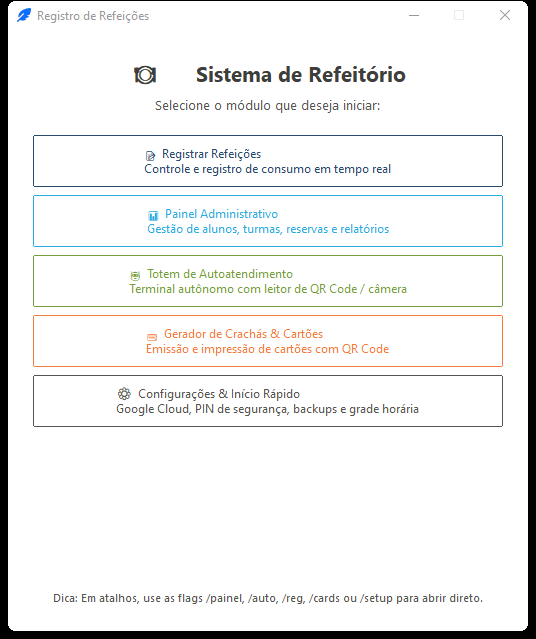
🧭 Sumário dos Capítulos
Explore o conteúdo completo de forma sequencial ou salte diretamente para o módulo que deseja consultar:
| Capítulo | Assunto | O que você encontra |
|---|---|---|
| 1. Visão Geral e Arquitetura | Introdução, módulos e instalação | Visão dos 5 módulos no Menu Inicial, flags de linha de comando (--reg, --painel, --auto, --cards, --setup), preparação inicial e estrutura de pastas. |
| 2. Configuração Inicial e Setup | --setup (6 abas + PIN) | Checklist de integridade, Google Cloud (credentials.json, OAuth / Service Account, ID da planilha), Totem & PIN PBKDF2, Grade Horária semanal, Backups .zip e atalhos no Windows. |
| 3. Painel Administrativo | --painel (5 abas + diálogos) | Gestão completa de Alunos (ativos/inativos, duplicidade), Turmas/Categorias (VincularAlunoDialog), Reservas, Importação inteligente (CSV/XLSX/Google) e Dashboard + exportações .xlsx. |
| 4. Regras de Negócio e Integração | Motor de regras, CSV/XLSX e Sheets | Normalização de prontuários (IQXX ➔ IQ30), leitura booleana/turno em planilhas, regras de bloqueio de Almoço/Jantar vs Lanche, Grade Horária, sanitização OWASP em relatórios e tabela sync_logs. |
| 5. Terminal do Operador | --reg (AppRegistro) | Abertura/retomada de sessões, pré-seleção de data pela Grade, filtro de turmas (# sem reserva e Horário Livre), busca com curingas, registro com confirmação, cancelamento auditado e janela secundária Self-Service. |
| 6. Totem de Autoatendimento | --auto (AppSelfService) | Leitura por webcam/scanner USB, tela pública Horários das Turmas (LIBERADO AGORA / EM BREVE / ENCERRADO), Menu de Contexto (F2 / Ctrl+M / botão direito), teclado PIN, aba Consumos + lançamento manual offline e Dashboard interno + sync Google Sheets. |
| 7. Gerador de Crachás | --cards (registro.cards) | Carregamento por SQLite ou CSV/XLSX, filtros por busca e turmas, grade A4 (2–4 × 4–10), marcas de corte, limite de 40 caracteres no cabeçalho PDF, exportação em PDF vetorial ou HTML e payload puro do QR Code. |
| 8. Rotinas do Dia a Dia | Guia prático de operação | Checklists de pré-abertura, condução do horário de pico, tratamento de exceções na fila (aluno sem crachá, troca de prato, turma antecipada), fechamento de turno e manutenção semanal. |
| 9. Atalhos de Teclado e Referência Rápida | Referência rápida | Tabela consolidada de atalhos e gestos reais por janela, curingas (todos, ---, ***, .., ., #), comandos CLI, badges de interface e mapa completo de arquivos gerados. |
| 10. Solução de Problemas e FAQ | Diagnóstico e suporte | Respostas diretas para falhas OAuth/Google Cloud, bloqueios de sessão/horário, câmera ou leitor USB, redefinição de PIN esquecido, restauração de backup .zip e logs rotativos em logs/. |
⚡ Primeiros Passos (Guia em 4 Etapas)
Se esta é a primeira vez que o sistema está sendo implantado no campus:
- Inicie o Menu Principal a partir da pasta raiz do projeto:
```bash uv run python -m registro ```
- Abra ⚙️ Configurações & Início Rápido (
--setup) para configurar credenciais do Google Cloud (se for usar planilhas online), definir o PIN do Operador, ajustar a Grade de Horários Semanal e verificar o checklist verde. - Abra o 📊 Painel Administrativo (
--painel) na aba Importação para carregar a planilha de estudantes e criar suas turmas/categorias e reservas do dia. - No horário do atendimento, escolha conforme a infraestrutura do refeitório:
- Terminal do Operador (
--reg) para balcão assistido com confirmação ágil pelo servidor. - Totem de Autoatendimento (
--auto) para guichê autônomo com webcam/QR Code, fila offline e controle de grade horária.
- Terminal do Operador (
📚 Glossário Rápido do Sistema
- Prontuário / Matrícula: Código identificador único do estudante (ex.:
SP301001,IQ301234). O sistema ignora prefixos padrão na busca numérica e normaliza códigos legados comoIQXX...paraIQ30.... - Grupo (
turmavscategoria): Além das turmas acadêmicas (ex.:1º Ano A - Informática), estudantes podem possuir categorias especiais (ex.:PAP,ESP1,LIB0) usadas para liberação prioritária na Grade Horária e nos filtros de sessão. - Sessão de Refeição: Representa um turno específico de atendimento (
almoço,jantaroulanche) em uma data e período, vinculando grupos participantes e contabilizando os consumos realizados. - Reserva (
Almoço/Jantar): Direito prévio agendado para o estudante em determinada data, com preferência de prato (Tradicional,Vegetariano,Vegano, etc.). Necessária para abrir sessões de Almoço e Jantar. - Lanche (Item Servido): Modalidade simplificada de sessão voltada ao intervalo/lanche; lista todos os alunos elegíveis dos grupos da sessão sem exigir reserva prévia individual.
- Exceção
#(Sem Reserva): Liberação intencional de consumo avulso registrada no Terminal do Operador ou liberada por grupo no filtro de turmas, marcada nos relatórios com#. - Modo Horário Livre: Chave temporária da sessão que ignora as janelas de hora da Grade Horária sem desligar a filtragem das turmas autorizadas no dia.
- Grade Horária (
grade_horarios.json): Escala semanal que define intervalos (inicio–fim) e quais turmas/categorias têm acesso permitido em cada janela. - Fila Offline (
SyncLog/ Pendente Sync): Consumos gravados instantaneamente no banco localconfig/registro.dbcaso a internet caia, aguardando envio posterior ao Google Sheets.
Versão da documentação: 1.3.0 • Todas as capturas de tela em docs/imagens/ refletem a interface gráfica real do sistema.
Capítulo 1 — Visão Geral, Arquitetura e Inicialização
O Sistema de Controle de Refeitório (MR2) — versão 1.3.0 — é uma suíte integrada de aplicativos desktop desenvolvida para gerenciar com segurança, rapidez e rastreabilidade todo o ciclo de alimentação escolar: cadastro de discentes, reservas de refeições, controle de acesso por grade horária e cotas diárias, emissão de crachás com QR Code e sincronização bidirecional com o Google Sheets.
⬅️ Voltar ao Índice do Manual | Próximo: Capítulo 2 — Configuração Inicial e Setup ➡️
1.1 Os Cinco Módulos do Sistema
Ao abrir o aplicativo sem parâmetros de linha de comando, a janela inicial (Menu Principal) apresenta os 5 módulos que compõem o ecossistema:
| Botão no Menu | Módulo | Finalidade Principal | Público-Alvo |
|---|---|---|---|
| 📝 Registrar Refeições | Terminal do Operador (Registrar) | Controle assistido da fila em tempo real, abertura/edição de sessões, aplicação de filtros por turma, exceções (#), Horário Livre e Bypass, além de estornos auditados. | Operadores de caixa / portaria do refeitório |
| 📊 Painel Administrativo | Painel (Painel) | Cadastro e manutenção de alunos, turmas e categorias (PAP, etc.), reservas individuais, assistente de importação em 4 passos, exportações e dashboard gerencial. | Nutricionistas, CAE e equipe administrativa |
| 🤖 Totem de Autoatendimento | Totem (Autoatendimento) | Quiosque autônomo para o próprio estudante apresentar o crachá QR Code na câmera ou passar no leitor de código de barras USB, com barra de horários, CRUD de consumos e dashboard da sessão. | Estudantes (fila autônoma) e supervisão via PIN |
| 💳 Gerador de Crachás & Cartões | Crachás (Cards) | Leitura do banco SQLite ou planilhas CSV/Excel para diagramação A4 e impressão de crachás com QR Code em PDF vetorial ou HTML. | Equipe administrativa / secretaria |
| ⚙️ Configurações & Início Rápido | Setup (Setup) | Checklist de prontidão do ambiente, conexão com Google Cloud/Sheets, criação automática das abas da planilha, configuração de PIN/Totem/Áudio, editor visual da Grade Horária semanal, backups .zip e utilitários. | Responsável técnico / administrador local |
Fluxo recomendado de implantação:
1. Setup (conectar planilha e definir grade/PIN) ➡️ 2. Painel (importar ou cadastrar alunos e reservas) ➡️ 3. Crachás (gerar cartões QR) ➡️ 4. Operador e/ou Totem (atendimento diário na fila).
1.2 Inicialização por Atalhos e Linha de Comando
Todos os módulos compartilham o mesmo núcleo e banco de dados. Você pode iniciar o sistema pelo menu gráfico ou ir direto a um módulo específico usando atalhos de desktop, scripts ou terminal.
Comandos dedicados (instalados no ambiente Python / uv run)
| Comando | Módulo Aberto |
|---|---|
registro | Abre o Menu Inicial (ou interpreta uma flag opcional) |
registrar | Abre diretamente o Terminal do Operador |
painel | Abre diretamente o Painel Administrativo |
autoatendimento | Abre diretamente o Totem de Autoatendimento |
cards | Abre diretamente o Gerador de Crachás & Cartões |
setup | Abre diretamente a Central de Configurações & Início Rápido |
Flags aceitas pelo executável principal (registro / python -m registro)
Todas as variações abaixo (com --, /, - ou sem prefixo) são reconhecidas sem diferenciação de maiúsculas/minúsculas:
- Terminal do Operador:
--reg,/reg,-reg,reg,--registrar,/registrar,registrar - Painel Administrativo:
--painel,/painel,-painel,painel - Totem de Autoatendimento:
--auto,/auto,-auto,auto,--autoatendimento,/autoatendimento,autoatendimento - Gerador de Crachás:
--cards,/cards,-cards,cards,--crachas,/crachas - Setup / Configurações:
--setup,/setup,-setup,setup,--config,/config,-config,config,--quickstart,/quickstart,quickstart - Ajuda de linha de comando:
--help,/help,-h,/?,help
💡 Dica para Windows: Crie atalhos diferentes na Área de Trabalho apontando para o mesmo executável e adicione
/autono destino do computador do quiosque ou/regno computador do atendente.
1.3 Arquitetura de Dados e Pastas do Sistema
O sistema funciona de modo offline-first: todas as leituras de atendimento (fila no Terminal ou no Totem) ocorrem instantaneamente contra o banco local SQLite, garantindo que instabilidades de internet não interrompam a entrega das refeições. A sincronização com o Google Sheets complementa o fluxo trazendo novos cadastros/reservas e enviando consumos e estornos.
Arquivos e diretórios gerenciados automaticamente
| Caminho | Função |
|---|---|
config/registro.db | Banco de dados relacional SQLite principal (estudantes, grupos, reservas, sessões, consumos ativos/cancelados e SyncLog). Utiliza modo WAL (-wal e -shm temporários durante uso). |
config/settings.json | Configurações de segurança (hash PBKDF2 + salt do PIN do operador), preferências do Totem e parâmetros de áudio. |
config/grade_horarios.json | Grade semanal (segunda a domingo) com janelas de horário por refeição (almoco, jantar, lanche), turmas e categorias. |
config/lanches.json | Catálogo de opções de lanche exibido ao criar sessões do tipo Lanche. |
config/presets_turmas.json | Predefinições de turmas organizadas por turno/dia (manha/tarde, seg..sex). |
config/turmas_integrado.json | Lista das turmas pertencentes ao Ensino Médio Integrado usada pelo atalho 🔗 Integrado nos filtros. |
config/mapeamento_colunas.json | Tabela de tradução de cabeçalhos externos de planilhas para nomes internos de colunas. |
config/session.json | Estado persistido da sessão ativa (id_sessao, lista excecao_grupos e flag ignorar_horario_grade). |
config/spreadsheet.json | Identificador (spreadsheet_id) da planilha do Google Sheets vinculada. |
config/credentials.json | Credencial OAuth2 Desktop ou Conta de Serviço (Service Account) baixada do Google Cloud. |
config/token.json | Token de autorização renovável gerado automaticamente após o primeiro login OAuth2 bem-sucedido. |
config/students.csv / config/reserves.csv | Cache local dos últimos dados baixados das abas Discentes e DB do Google Sheets (também usado como fonte padrão opcional no Gerador de Crachás). |
backups/ | Pacotes .zip completos do diretório config/ (criados manualmente ou de forma automática antes de restaurações e redefinições). |
logs/ | Arquivos de log por módulo (<nome_app>.log) com rotação automática ao atingir 5 MB (mantendo até 5 backups históricos) e captura global de exceções não tratadas. |
⬅️ Voltar ao Índice do Manual | Próximo: Capítulo 2 — Configuração Inicial e Setup ➡️
Capítulo 2 — Configuração Inicial e Setup (Configurações & Início Rápido)
A Central de Configurações & Início Rápido (setup / --setup) centraliza toda a preparação do ambiente, credenciais de nuvem, políticas de segurança por PIN, editor visual da grade de horários semanal, cópias de segurança e utilitários do catálogo.
⬅️ Capítulo 1 — Visão Geral | 📑 Índice | Capítulo 3 — Painel Administrativo ➡️
2.1 Segurança por PIN nas Alterações
Se você já tiver definido um PIN numérico (de 4 a 12 dígitos), o Setup exige autenticação prévia por segurança antes de aplicar operações sensíveis, como alterar configurações do Totem/PIN, restaurar ou excluir backups ou redefinir o banco de dados.
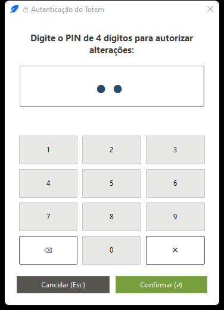
- Como digitar: Clique nos botões da tela (touchscreen) ou utilize o teclado físico (
0–9,BackSpace/⌫para apagar,Enterpara confirmar,Escpara cancelar). - Sem PIN configurado: Se o sistema ainda não possuir PIN cadastrado (
pin_hashvazio emconfig/settings.json), nenhuma solicitação de senha será exibida.
2.2 Aba 1 — 📋 Checklist & Início
A primeira aba fornece um diagnóstico instantâneo do ambiente antes de iniciar o atendimento.
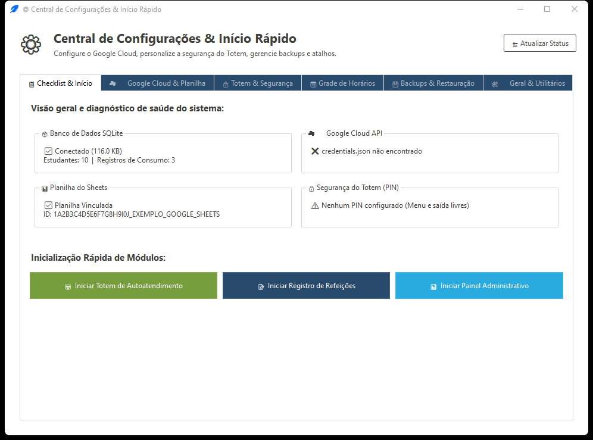
Os 5 Cartões de Diagnóstico
- 📦 Banco de Dados SQLite: Verifica se
config/registro.dbestá criado e acessível. - ☁️ Google Cloud API: Indica se
config/credentials.jsonfoi localizado (e se já háconfig/token.jsonou Conta de Serviço configurada). - 📊 Planilha Vinculada: Mostra se há um
spreadsheet_idválido salvo emconfig/spreadsheet.json. - 🔐 PIN de Segurança do Totem: Informa se a proteção por PIN está Ativa ou Não Configurada.
- 💾 Backup e Integridade: Contabiliza quantos arquivos
.zipexistem atualmente na pastabackups/.
Botões da Aba
- 🔄 Atualizar Status (no topo direito da janela): Recarrega todos os cartões e indicadores.
- Botões de Início Rápido (rodapé da aba): Permitem lançar diretamente os módulos operacionais após concluir os ajustes, além de avançar rapidamente para abas pendentes do próprio checklist.
2.3 Aba 2 — ☁️ Google Cloud & Planilha
Esta aba prepara a sincronização bidirecional com uma planilha do Google Sheets.
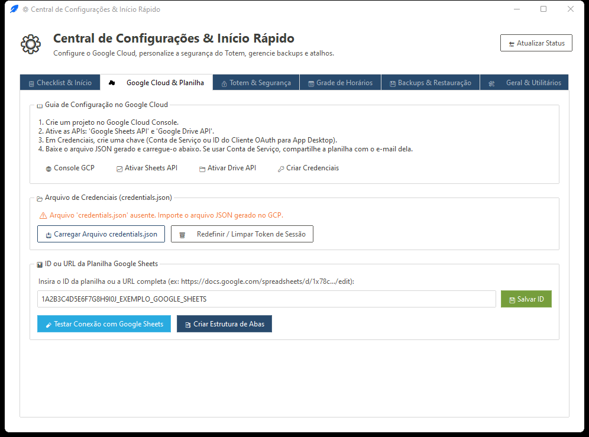
Parte 1: Credenciais da API (credentials.json)
O sistema aceita dois tipos oficiais de arquivo JSON gerados no Google Cloud Console (com a Google Sheets API habilitada):
- OAuth 2.0 (ID de cliente para computador / Desktop App):
- Clique em Selecionar credentials.json... para copiar o arquivo escolhido para
config/credentials.json. - Clique em Testar Login OAuth para abrir o navegador padrão e autorizar sua conta Google. O sistema gravará
config/token.jsonpara autenticações futuras sem novo login manual.
- Clique em Selecionar credentials.json... para copiar o arquivo escolhido para
- Conta de Serviço (
service_account):- Importe o JSON da Conta de Serviço em Selecionar credentials.json....
- Nesse modo não há login pelo navegador nem
token.json; basta compartilhar a planilha do Google Sheets (com permissão de Editor) com o endereçoclient_emailpresente no JSON.
Parte 2: Vínculo e Estrutura da Planilha (spreadsheet.json)
- Cole no campo da planilha a URL completa do Google Sheets (ex.:
https://docs.google.com/spreadsheets/d/1ABC.../edit) ou apenas o ID (1ABC...). O sistema extrai o identificador automaticamente. - Clique em Salvar Planilha.
- Clique em Criar Estrutura de Abas para validar ou montar automaticamente todas as 8 abas esperadas na planilha conectada:
Discentes,DB,Almoço,Jantar,Lanche,Consumo_Cancelados,ConfiguraçãoeLanches.- Comportamento seguro: Se uma aba não existir, ela é criada com o cabeçalho padronizado em negrito e a 1ª linha congelada. Se a aba já existir e estiver vazia, o cabeçalho é inserido; se já contiver dados, é preservada intacta sem sobrescrita.
📖 Consulte o Capítulo 4 — Regras de Negócio e Integração para ver o esquema exato de colunas de cada uma das 8 abas.
2.4 Aba 3 — 🔒 Totem & Segurança
Controla a trava de saída/menus do Totem, exibição inicial da câmera e sinalização sonora.
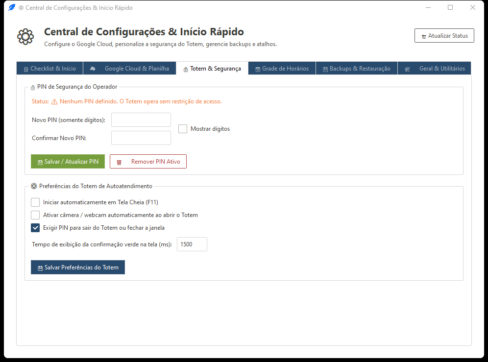
Segurança e PIN do Operador
- Definir / Alterar PIN: Informe um código numérico entre 4 e 12 dígitos. O sistema nunca salva a senha em texto puro — armazena apenas um derivado criptográfico (
PBKDF2-HMAC-SHA256com salt aleatório) emconfig/settings.json. - Remover PIN: Desativa a exigência de senha nos controles do Totem e no Setup (exige confirmação com o PIN atual caso já esteja ativo).
Preferências do Totem (totem em settings.json)
| Opção | Padrão | Efeito Prático |
|---|---|---|
Iniciar em Tela Cheia (fullscreen) | Desmarcado (false) | Quando ativado, abre o Totem cobrindo toda a tela e ocultando barras do sistema (F11 / Esc continuam funcionando para sair/alternar). |
Ligar Câmera ao Iniciar (camera_on_start) | Marcado (true) | Inicia a webcam automaticamente na abertura do Totem para leitura contínua de QR Code. Desmarque se utilizar apenas leitor de código de barras USB ou digitação. |
Exigir PIN para Sair/Menus (require_pin_to_exit) | Marcado (true) | Protege o menu ⚙️ Controles (F2/Ctrl+M/botão direito) e o fechamento da janela do Totem quando houver um PIN cadastrado. |
Tempo de Feedback em ms (feedback_delay_ms) | 1500 ms | Tempo em milissegundos em que a tela verde (sucesso) ou vermelha (erro) e a borda na câmera permanecem visíveis antes de voltar ao estado Aguardando QR Code.... |
Índice da Câmera (camera_index) | 0 | Índice OpenCV do dispositivo de vídeo (0 para webcam principal/integrada; 1, 2, etc. se houver mais de uma câmera conectada). |
Áudio e Bips (audio em settings.json)
- Habilitar Feedback Sonoro (
habilitado): Ativa ou silencia os bips de confirmação e alerta. - Frequências e Durações: Permite ajustar no Windows os valores de
winsound.Beep(padrão: Sucesso = 1000 Hz por 200 ms; Erro = 400 Hz por 1000 ms). Em Linux/Unix utiliza o alerta nativo do sistema (bell()). - Testar Som: Dispara os bips configurados para conferir o volume antes de colocar o Totem no refeitório.
- Salvar Configurações: Persiste todas as alterações da aba em
config/settings.json.
2.5 Aba 4 — 📅 Grade de Horários
Define as faixas oficiais de atendimento por dia da semana e refeição. O editor manipula diretamente o arquivo config/grade_horarios.json.
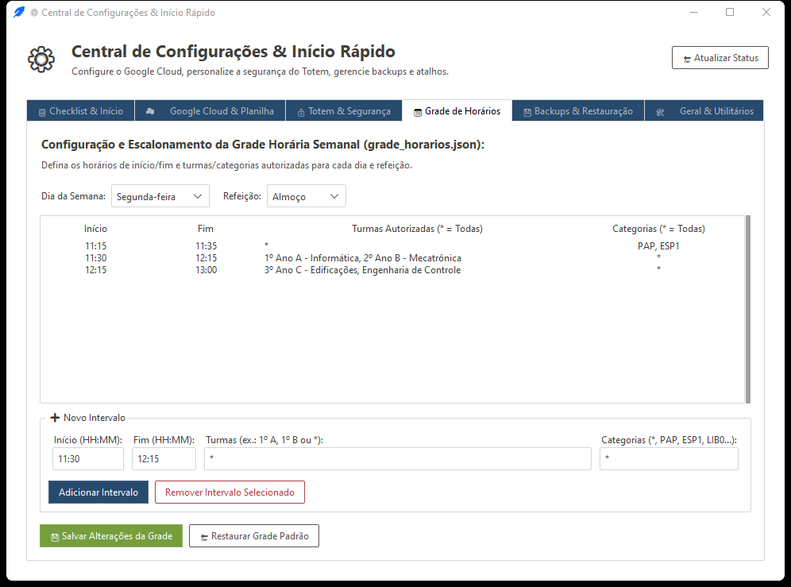
Como Configurar os Slots
- Selecione o Dia da Semana (
segundaadomingo) e a Refeição (almoco,jantaroulanche). - Na grade listada, cada faixa (slot) contém 4 campos:
- Início (
HH:MM) e Fim (HH:MM): janela principal da faixa (ex.:11:30até12:10). Na validação real, o sistema aplica automaticamente ±5 minutos de tolerância. - Turmas autorizadas: nomes exatos de turmas separados por vírgula (ex.:
1º A - MAC, 1º A - MEC) ou coringa*(ouTodas) para não restringir por turma. - Categorias autorizadas: nomes de categorias separados por vírgula (ex.:
PAP, ESP1) ou coringa*(ouTodas).
- Início (
- Use os botões da aba para Adicionar Faixa, Editar/Atualizar, Remover Faixa, Copiar Dia (quando disponível) e Salvar Grade.
⚠️ Regra de avaliação de Turmas × Categorias e Fallback:
* Se um horário restringe apenas Turmas (e Categorias =*), só alunos daquelas turmas entram na faixa.
* Se restringe apenas Categorias (e Turmas =*), só alunos com aquelas categorias entram na faixa (ideal para atendimento prioritário dePAPàs 11:15, por exemplo).
* Se ambos tiverem restrições específicas, aplica-se a regra OU: entra quem pertencer à turma listada OU possuir a categoria listada.
* Se não existir nenhum slot para um determinadodia + refeição, a trava horária fica liberada (fallback para grupos da sessão).
* Atenção ao sincronizar com a nuvem: se a abaConfiguraçãodo Google Sheets tiver faixas válidas, o download de dados sobrescreverágrade_horarios.json.
2.6 Aba 5 — 💾 Backups & Restauração
Ferramenta de segurança para proteger todo o diretório config/ (banco SQLite registro.db e todos os JSONs/CSVs de configuração).
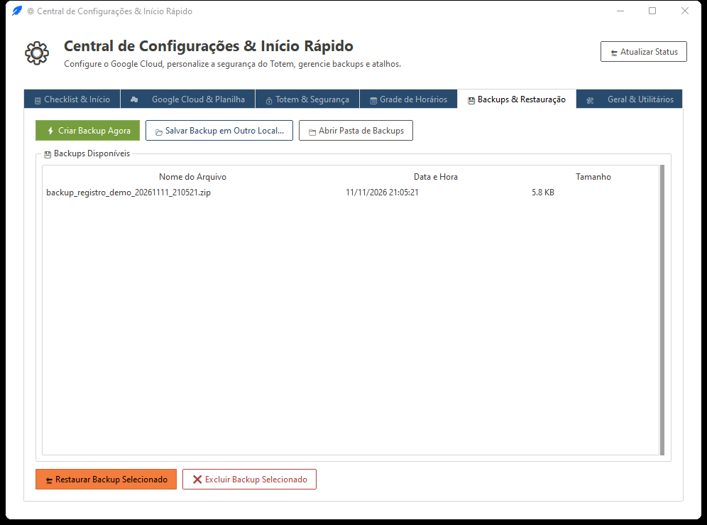
- Criar Backup Agora: Executa automaticamente um checkpoint WAL no SQLite (garantindo que nenhuma transação em memória fique de fora), compacta todo o conteúdo de
config/embackups/backup_registro_YYYYMMDD_HHMMSS.zip(ignorando arquivos temporários.tmp,.lock,-wale-shm) e atualiza a lista. - Restaurar Selecionado:
- Solicita confirmação (e PIN, se configurado).
- Antes de extrair o backup escolhido, cria automaticamente um ponto de retorno de segurança com prefixo
backup_pre_restauracao_...zip. - Protege contra caminhos maliciosos (zip-slip) durante a extração.
- Excluir Selecionado: Remove permanentemente o arquivo
.zipda pastabackups/após confirmação. - Redefinir Banco de Dados (Área Crítica):
- Exige dupla confirmação e gera automaticamente um backup preventivo
backup_pre_redefinicao_...zipantes de zerarregistro.db, recriando a estrutura limpa de tabelas.
- Exige dupla confirmação e gera automaticamente um backup preventivo
2.7 Aba 6 — 🛠️ Geral & Utilitários
Agrupa atalhos de manutenção do ambiente e edição rápida das listas auxiliares em JSON.
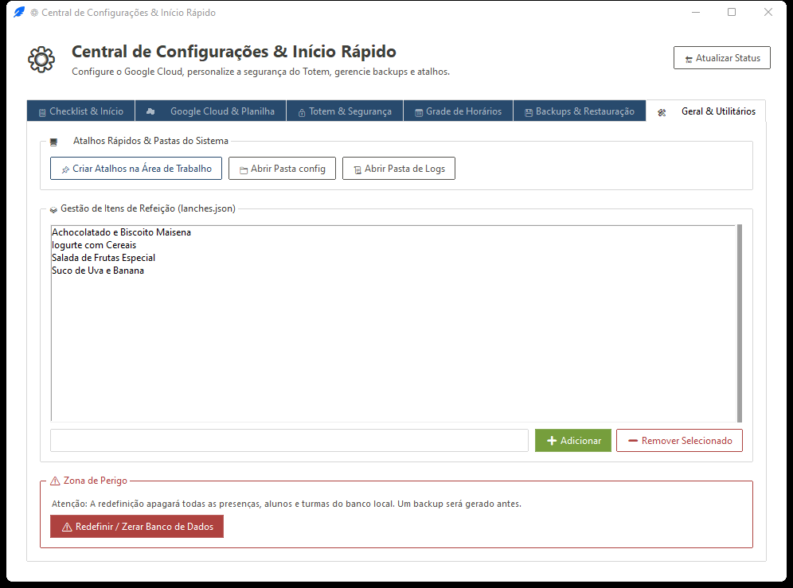
- Gerenciar Cardápio de Lanches (
config/lanches.json): Permite adicionar ou remover descrições de lanches pré-cadastradas que aparecem no combo de criação/edição de sessões do tipo Lanche. - Turmas do Integrado (
config/turmas_integrado.json): Edita a lista de turmas considerada pelo botão rápido 🔗 Integrado nos diálogos de sessão e filtro. - Acesso Rápido às Pastas: Botões para abrir diretamente no explorador de arquivos do sistema operacional os diretórios de Configuração (
config/), Logs (logs/) e Backups (backups/) — muito útil para inspecionar<app>.logem caso de suporte técnico.
⬅️ Capítulo 1 — Visão Geral | 📑 Índice | Capítulo 3 — Painel Administrativo ➡️
Capítulo 3 — Painel Administrativo (Painel)
O Painel Administrativo (painel / --painel) é a retaguarda de gestão do sistema. A navegação lateral esquerda dá acesso às 5 seções principais (📊, 👤, 🏫, 📅, 🔄) e ao botão de saída (❌).
⬅️ Capítulo 2 — Configuração e Setup | 📑 Índice | Capítulo 4 — Regras de Negócio e Integração ➡️
3.1 Conceito-Chave: Turmas Reais vs. Categorias
Em todo o Painel Administrativo e na lógica de acesso do refeitório, os grupos são divididos em dois tipos distintos:
- Turma (Real): A classe/curso oficial do aluno (ex.:
1º Ano A - Informática,Engenharia de Controle). - Categoria (Optativa / Programa / Evento): Marcadores ou programas vinculados ao estudante de forma permanente (no cadastro do aluno) ou pontual (apenas em uma reserva de data específica), como
PAP(Programa de Assistência Estudantil),ESP1ouLIB0.
💡 Marcadores vazios ou legados como
-,N/A,REGULAR,none,nullounenhumasão descartados automaticamente na importação e normalização — um aluno sem tags especiais simplesmente não possui categorias listadas.
3.2 Aba 👤 Alunos
Gerencia todo o corpo discente, seus vínculos de turma, categorias permanentes e estado ativo/inativo.
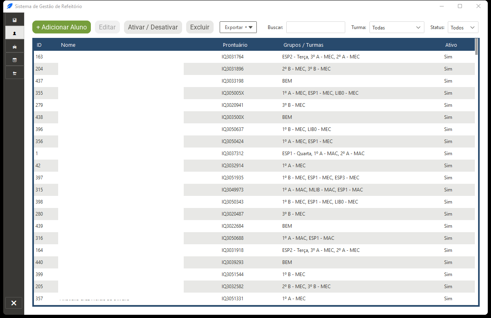
Barra de Ações e Filtros
- + Adicionar Aluno / Editar (ou duplo clique na linha): Abre o formulário
StudentDialog. - Ativar / Desativar: Alterna rapidamente o status
Ativosem apagar histórico. Atenção: alunos marcados como Inativos não aparecem nas listas de elegíveis e são bloqueados automaticamente tanto no Terminal do Operador quanto no Totem (mesmo com Bypass). - Excluir: Executa exclusão com verificação de integridade referencial:
- Se o aluno não tiver nenhuma reserva ou consumo histórico, é excluído permanentemente do banco.
- Se o aluno possuir histórico de reservas ou consumos, a exclusão física é bloqueada para preservar os relatórios e o sistema pergunta se deseja apenas desativá-lo (soft-delete fallback).
- Exportar ▾ (XLSX / CSV): Exporta exatamente os alunos atualmente exibidos conforme os filtros ativos na tela.
- Filtros: Campo Buscar (por nome ou prontuário), seletor Turma (
Todasou grupo específico) e seletor Status (Todos,Ativos,Inativos). - Ordenação: Clique em qualquer cabeçalho de coluna da tabela (
ID,Prontuário,Nome,Turmas,Categorias,Ativo) para alternar ordenação crescente/decrescente.
Diálogo de Cadastro / Edição de Aluno (StudentDialog)
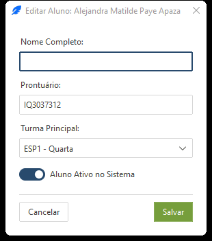
- Nome Completo e Prontuário / Matrícula: obrigatórios na criação. Na edição, o Prontuário fica em modo somente leitura (
readonly) para preservar a integridade dos códigos QR já impressos. - Turma (Real): Selecione no menu suspenso a turma principal do estudante.
- Categorias Permanentes (
_SeletorCategoriasFrame): Marque uma ou mais caixas de categorias já existentes e/ou digite categorias extras separadas por vírgula (ex.:PAP,Monitoria). Categorias inexistentes são criadas automaticamente como grupos do tipocategoria. - Status Ativo: Caixa de seleção indicando se o aluno pode registrar refeições no sistema.
3.3 Aba 🏫 Turmas
Tela dividida em duas colunas para gerenciar grupos (Turma e Categoria) à esquerda e inspecionar/vincular os estudantes pertencentes ao grupo selecionado à direita.
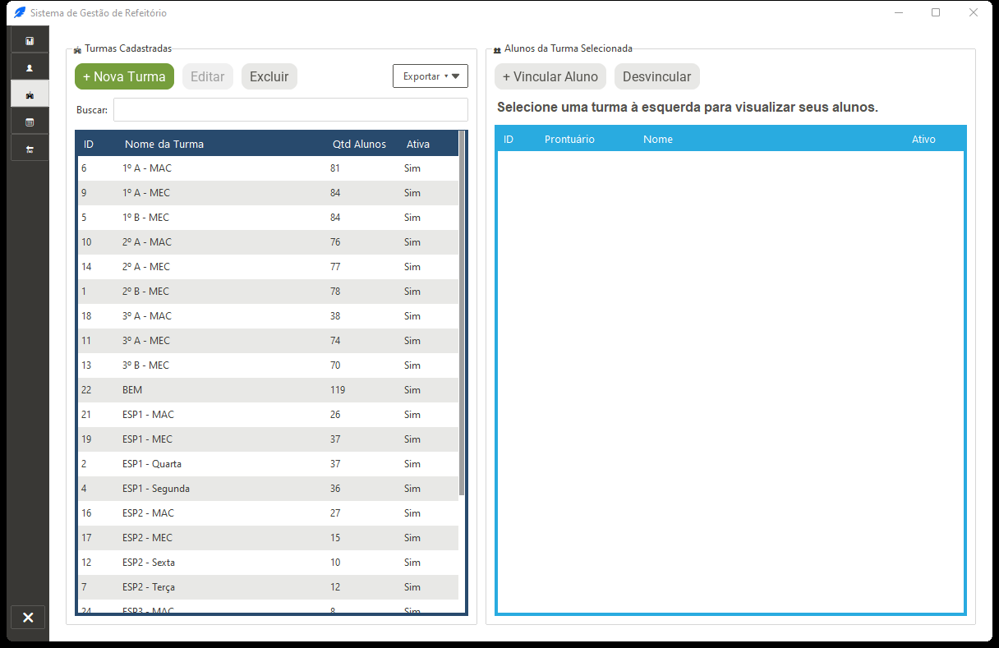
Painel Esquerdo — Turmas e Categorias
- Filtros: Busca textual pelo nome e filtro por Tipo (
Todos,Turma,Categoria). - + Nova Turma / Editar: Abre o diálogo
TurmaDialogcom os campos Nome, Tipo (Turma (Real)ouCategoria (Optativa / Programa / Evento)) e Grupo Ativo.
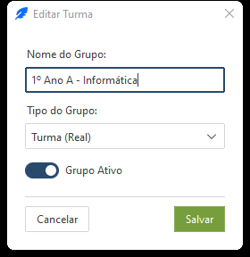
- Excluir: Se o grupo possuir alunos ou sessões vinculadas, o sistema exibe a contagem exata de vínculos e oferece a opção de forçar a exclusão (desvinculando os alunos e sessões antes de apagar o grupo) ou cancelar para apenas desativar o grupo.
- Exportar ▾ (XLSX / CSV): Exporta a listagem atual de turmas/categorias com tipo, status e total de alunos.
Painel Direito — Alunos da Turma Selecionada
- + Vincular Aluno: Abre o diálogo
VincularAlunoDialogcom busca instantânea (fuzzy) por nome ou prontuário entre todos os alunos cadastrados. Basta selecionar (ou dar duplo clique) para adicionar o estudante ao grupo selecionado.
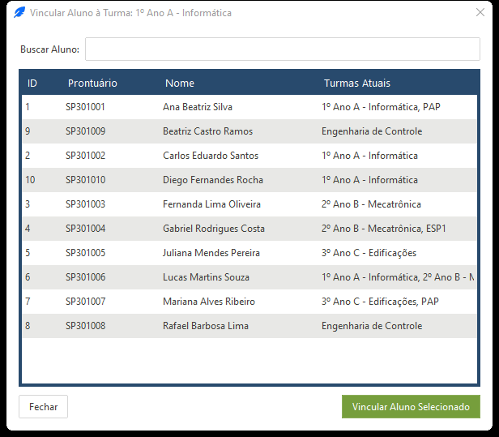
- Desvincular: Remove a associação do aluno selecionado com aquela turma/categoria (sem apagar o cadastro do aluno).
3.4 Aba 📅 Reservas
Controla as reservas individuais por data, cardápio escolhido, turnos (Almoço / Jantar) e categorias pontuais.
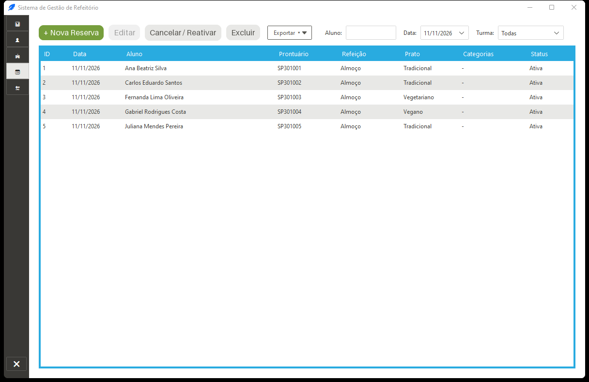
Ações, Filtros e Colunas
- Filtros: Busca por Aluno, seletor de Data (
Todasou datas existentes em ordem cronológica reversa) e Turma. - Colunas:
ID,Data,Prontuário,Aluno,Turma,Refeição(Almoço,JantarouAlmoço e Jantar),Prato,Categorias,Cancelada(Sim/Não). - + Nova Reserva / Editar (ou duplo clique na linha): Abre o formulário
ReservaDialog. - Cancelar / Reativar Reserva: Botão dinâmico que muda automaticamente de texto e cor conforme o estado da linha selecionada, permitindo cancelar ou reativar a reserva com um clique.
- Excluir: Remove definitivamente o registro da reserva após confirmação.
- Exportar ▾ (XLSX / CSV): Salva exatamente as reservas filtradas na tabela no formato escolhido.
Diálogo de Reserva (ReservaDialog)
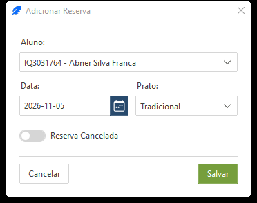
- Aluno: Selecionável apenas ao criar uma nova reserva (bloqueado em somente leitura na edição).
- Data: Seletor de calendário no formato
YYYY-MM-DD. - Prato / Cardápio: Combo com opções padrão (
Tradicional,Vegetariano,Vegano) ou texto livre. - Turnos (
Almoço/Jantar): Checkboxes independentes. Regra obrigatória: ao menos um turno (AlmoçoouJantar) precisa estar marcado para salvar; é possível marcar ambos na mesma reserva diária. - Categorias Pontuais da Reserva: Selecionáveis via checkboxes/vírgula e vinculadas exclusivamente àquela data de reserva (somam-se às categorias permanentes do aluno durante a refeição daquele dia sem alterar seu cadastro fixo).
- Reserva Cancelada: Interruptor para marcar a reserva como cancelada/ativa.
3.5 Aba 🔄 Importação & Exportação
Reúne o assistente em 4 passos para entrada em lote de alunos/reservas e o painel inferior de extração completa do banco.
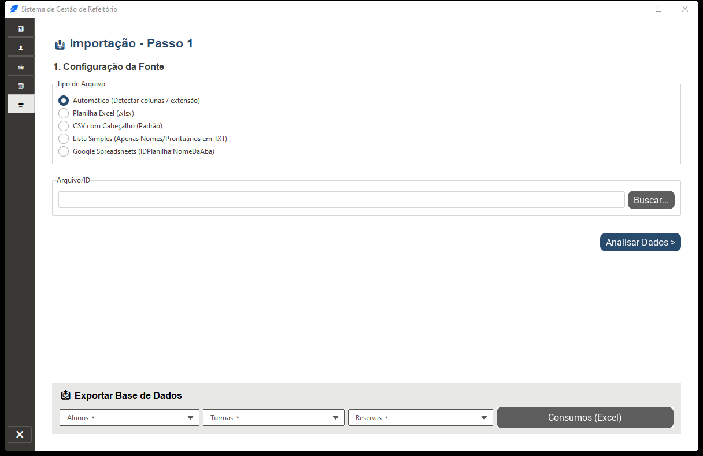
Assistente de Importação em 4 Passos
Passo 1 — Origem dos Dados
Escolha um dos 5 modos de leitura:
auto(CSV Posicional Inteligente): Analisa verticalmente amostras de cada coluna de um CSV (mesmo sem cabeçalho) e deduzprontuario,nome,dataeturma.excel(Planilha.xlsx): Lê a primeira aba de um arquivo Excel tratando a primeira linha como cabeçalho.header(CSV com Cabeçalho): Lê CSVs padronizados respeitando nomes comoMatrícula,Prontuário,Nome,Data,Refeição/Prato,Almoço,Jantar,Turno,TurmaeCategoria/Tags.simples(TXT / CSV de coluna única): Aceita uma lista simples linha a linha (prontuários OU nomes completos separados apenas por quebra de linha).sheets(Google Sheets Direto): InformeNomeDaAba(usando a planilha padrão) ouIDPlanilha:NomeDaAbapara baixar diretamente da nuvem.
Passo 2 — Resumo, Padrões e Resolução de Conflitos
Após clicar em Analisar Fonte, o sistema exibe a contagem de linhas (Total, Automáticos, Para Revisão e Inválidos) e oferece:
- Valores Padrão: Campos opcionais para preencher lacunas da planilha importada: Data padrão (
DD/MM/YYYY), Prato padrão, checkboxes Almoço / Jantar e Categorias adicionais. - Tabela de Revisão de Conflitos: Linhas que não tiveram correspondência automática garantida (
NOVO_ESTUDANTE,MULTIPLOS_MATCHESouDADOS_DIVERGENTES) permitem escolher linha a linha:CRIAR_NOVO: Cadastra novo estudante com os dados da linha (se tiver prontuário e nome válidos).VINCULAR: Seleciona no combo um dos até 4 candidatos sugeridos pelo banco (exibidos com a pontuação de similaridade%).IGNORAR: Descarta a linha na importação atual.
Passo 3 — Pré-visualização (Simulação)
Mostra lado a lado duas tabelas antes de gravar no banco: Novos Estudantes a Criar e Reservas a Gerar/Mesclar, conferindo datas, turnos e categorias finais.
Passo 4 — Conclusão
Persiste os dados de forma transacional. Importante: reservas para o mesmo estudante e mesma data são mescladas automaticamente (combinando turnos Almoço/Jantar e unindo categorias pontuais) em vez de gerar duplicatas conflitantes.
Painel Inferior — 📤 Exportar Base de Dados
Localizado na parte inferior da aba, permite extrair toda a base do banco (independentemente de filtros de outras abas):
- Alunos ▾ (
XLSXouCSV— via seletor de arquivo) - Turmas ▾ (
XLSXouCSV— via seletor de arquivo) - Reservas ▾ (
XLSXouCSV— via seletor de arquivo) - Consumos (Excel): Gera diretamente na pasta Documentos do usuário o arquivo
exportacao_total_consumos_YYYYMMDD_HHMMSS.xlsxcontendo todos os consumos ativos de todas as sessões (incluindo colunaSessão ID).
3.6 Aba 📊 Dashboard
Visão analítica somente leitura do dia corrente em toda a base de dados.
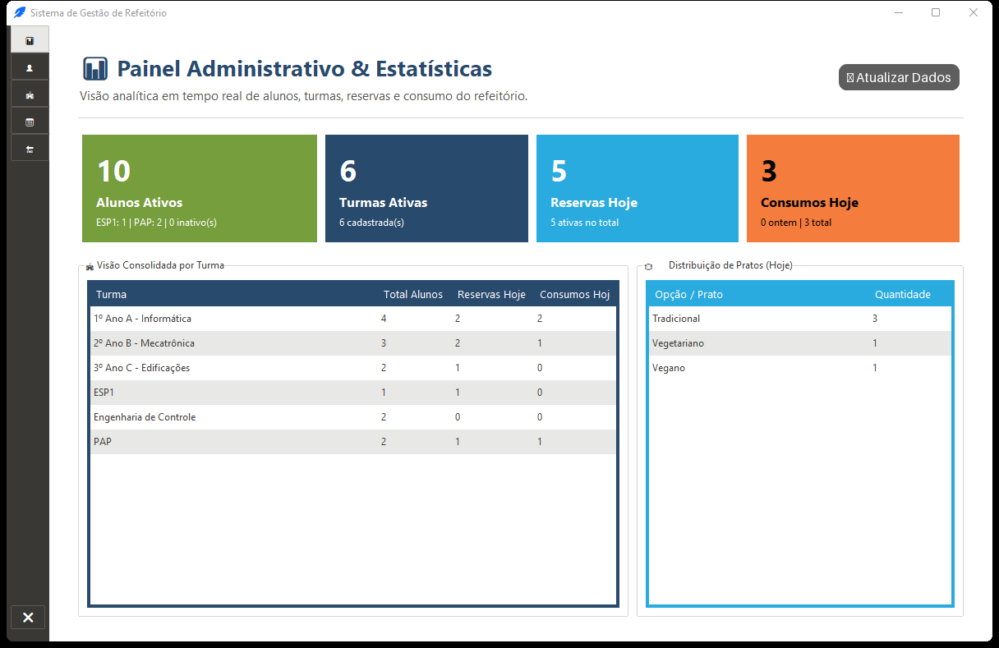
- 🔄 Atualizar Dados: Recalcula imediatamente os indicadores consultando o SQLite.
- 4 Cartões Executivos: Alunos Ativos, Turmas Ativas, Reservas Hoje e Consumos Hoje.
- 🏫 Visão Consolidada por Turma: Tabela comparativa exibindo para cada turma/grupo o total de discentes vinculados, quantidade com reserva hoje e quantos já consumiram hoje.
- 🍽️ Distribuição de Pratos (Hoje): Contagem de reservas ativas do dia agrupadas por cardápio (
Tradicional,Vegetariano,Vegano, etc.).
⬅️ Capítulo 2 — Configuração e Setup | 📑 Índice | Capítulo 4 — Regras de Negócio e Integração ➡️
Capítulo 4 — Regras de Negócio, Fluxo de Autorização e Formatos de Integração
Este capítulo explica exatamente como o sistema decide se um estudante pode ou não receber a refeição, como funcionam cotas, grade horária, categorias, estornos, sincronização com Google Sheets e quais formatos de planilhas e JSONs são aceitos.
⬅️ Capítulo 3 — Painel Administrativo | 📑 Índice | Capítulo 5 — Terminal do Operador ➡️
4.1 Pipeline Completo de Autorização (registrar_consumo)
Sempre que um QR Code é lido no Totem, um código USB é bipado ou o operador confirma um registro no Terminal, o núcleo executa a seguinte sequência estrita de verificações:
- Identificação do Estudante: Busca o prontuário exato (removendo espaços e padronizando maiúsculas). Se o usuário digitou nome ou matrícula abreviada sem
IQ30..., a interface resolve o prontuário via regras específicas antes de acionar o núcleo.- Se não existir no banco: retorna
Estudante não encontrado.
- Se não existir no banco: retorna
- Verificação de Status Ativo: Confirma se
estudante.ativo == True.- Se estiver inativo: bloqueia mesmo com Bypass ou Horário Livre — retorna
Estudante inativo.
- Se estiver inativo: bloqueia mesmo com Bypass ou Horário Livre — retorna
- Duplicidade na Mesma Sessão: Verifica se já há consumo ativo desse estudante na
sessao_idatual.- Se já houver: bloqueia mesmo com Bypass — retorna
Consumo já registrado.
- Se já houver: bloqueia mesmo com Bypass — retorna
- Cota Diária por Refeição e Período (Inviolável):
- Para
almoçooujantar: bloqueia se já existir qualquer consumo ativo do mesmo estudante naquela mesma data e tipo de refeição (mesmo em outra sessão do dia). RetornaConsumo de <refeição> já registrado nesta data (Cota diária atingida). - Para
lanche: bloqueia se já existir consumo ativo de lanche na mesma data e no mesmoperíododa sessão (se o período estiver preenchido; ex.:Matutino,Vespertino). RetornaLanche já consumido nesta data [no período X] (Cota atingida). - Atenção: A cota diária NÃO pode ser burlada com
⚡ Bypassou sufixo.— caso um lançamento anterior tenha sido errado, primeiro é necessário anular/cancelar o consumo anterior para liberar a cota novamente.
- Para
- Validação da Grade Horária (
grade_horarios.json):- Só é ignorada se o operador ativar
⚡ Bypass(pular_grupos=True) (ou marcar "Liberar acesso avulso (ignorar grupos e horários da grade)" emDialogoNovoConsumo). - Se não houver nenhum slot configurado para o par
dia_da_semana + refeiçãona grade, a trava horária é considerada livre e o sistema passa direto para o passo 6. - Tolerância padrão:
±5 minutosantes do horário de início e após o horário de término de cada slot. - Combinação de Turma e Categoria no Slot:
- Quando o slot especifica apenas
turmas(ecategorias=*ou vazio): exige que uma turma do aluno esteja na lista. - Quando especifica apenas
categorias(eturmas=*ou vazio): exige que uma categoria do aluno (permanente ou pontual da reserva ativa do dia) esteja na lista. - Quando ambos (
turmasecategorias) possuem valores específicos (sem*/Todas), aplica-se a regra OU: entra quem atender à turma OU à categoria. - Quando ambos são
*/Todas/vazios: qualquer turma/categoria é aceita naquele horário.
- Quando o slot especifica apenas
- Modo
🕒 Horário Livre(ignorar_horario_grade=True): Ignora os limites de hora (inicio/fim), mas continua exigindo que a turma ou categoria do estudante esteja prevista em pelo menos um slot da refeição daquele dia. Em sessões abertas no Totem com data retroativa, oHorário Livreé ativado automaticamente.
- Só é ignorada se o operador ativar
- Regra de Elegibilidade (Reserva, Grupo ou Exceção
#):- Em
almoçooujantar:- Se o aluno possui reserva ativa não utilizada naquela data e para aquele turno (
almoco=Trueoujantar=True), é autorizado com o prato da reserva (Tradicional,Vegetariano, etc.). - Se não houver reserva livre, verifica se está com
⚡ Bypass(pular_grupos=True) ➡️ autoriza com pratoSem Reserva (Forçado). - Se já havia uma reserva para aquele turno, mas já vinculada a outro consumo ativo na mesma refeição ➡️ bloqueia com
Reserva já utilizada nesta data. - Se não tem reserva, verifica se alguma turma/categoria efetiva do estudante está marcada como Exceção (
#/excecao_grupos) na sessão ➡️ se sim, autoriza com pratoSem Reserva (Grupo). Caso contrário ➡️Acesso Negado.
- Se o aluno possui reserva ativa não utilizada naquela data e para aquele turno (
- Em
lanche:- Não exige reserva prévia: basta que o estudante pertença a uma turma/categoria selecionada na sessão OU a um grupo em Exceção (
#) OU esteja em⚡ Bypass. O prato gravado é o item configurado emitem_servido(ouLanche).
- Não exige reserva prévia: basta que o estudante pertença a uma turma/categoria selecionada na sessão OU a um grupo em Exceção (
- Em
4.2 Resumo Comparativo: Normal vs. Horário Livre vs. Bypass
| Modo de Operação | Checa Aluno Ativo & Cota Diária? | Checa Relógio (Faixa HH:MM ±5 min)? | Exige Turma/Cat na Grade do Dia? | Exige Reserva (Almoço/Jantar) ou Grupo (Lanche)? |
|---|---|---|---|---|
| Normal | Sim | Sim | Sim (se houver slots no dia) | Sim (ou grupo em Exceção #) |
| 🕒 Horário Livre | Sim | Não | Sim (se houver slots no dia) | Sim (ou grupo em Exceção #) |
Exceção # (por grupo) | Sim | Conforme Normal/Horário Livre | Conforme Normal/Horário Livre | Não para os grupos marcados com # |
⚡ Bypass / sufixo . | Sim | Não | Não | Não (força entrada avulsa respeitando cota) |
4.3 Normalização, Correspondência Inteligente (Fuzzy) e Categorias
- Limpeza e padronização de prontuário:
- No Totem e na janela fallback de QR, entradas numéricas ou alfanuméricas sem prefixo completo são padronizadas automaticamente para o formato
IQ30XXXXX(aceitando dígitos0–9eX, preenchendo os últimos 5 caracteres com zero à esquerda se necessário). - Na importação de planilhas (
ajustar_chaves_e_valores), prefixosIQseguidos de quaisquer 2 dígitos são normalizados paraIQ30.
- No Totem e na janela fallback de QR, entradas numéricas ou alfanuméricas sem prefixo completo são padronizadas automaticamente para o formato
- Composição de Categorias: As categorias consideradas no atendimento, nas estatísticas e nas exportações resultam da união das categorias permanentes do aluno com as categorias pontuais da sua reserva ativa do dia.
- Rótulos vazios ou legados (
"","-","N/A","REGULAR","none","null","nenhuma") são descartados automaticamente.
- Rótulos vazios ou legados (
- **Limiares de Busca por Nome / Prontuário (Fuzzy Matching):**
- Terminal do Operador: Busca com
debouncede 100 ms a partir de 2 caracteres. Aceita matrícula (score ≥ 85) ou nome (score ≥ 70). - Totem de Autoatendimento (USB / digitação): Se a matrícula formatada não existir, busca por nome entre alunos elegíveis com score ≥ 90, aprovando automaticamente apenas se for candidato único, ou se tiver score ≥ 98, ou vantagem ≥ 10 pontos sobre o 2º colocado (caso contrário retorna "Múltiplos resultados encontrados. Digite o prontuário.").
- Importador em Lote (
AnalisadorSimplificado):SCORE_MATCH_CERTO = 95,SCORE_MATCH_PRONTUARIO = 85,SCORE_MATCH_NOME = 75(corte mínimo de sugestões60, exibindo até 4 candidatos).
- Terminal do Operador: Busca com
4.4 Exclusão Lógica (Soft Delete), Mesclagem de Reservas e Segurança
Auditoria de Cancelamentos (Soft Delete)
Ao excluir/anular um consumo (seja pela tabela do Terminal do Operador ou pelo CRUD do Totem), o registro não é apagado fisicamente do SQLite. Em vez disso:
ativomuda paraFalse;- são gravados
deletado_em(data/hora exata),deletado_por(nome do operador informado) emotivo_cancelamento(justificativa); - a cota diária do aluno e eventual vínculo de consumo da reserva são liberados;
- ao sincronizar com a nuvem ou exportar a sessão em
.xlsx, todos os estornos vão automaticamente para a abaConsumo_Cancelados(Google Sheets) ouCancelados(Excel).
Mesclagem Automática de Reservas na Importação
Ao importar reservas em lote (via assistente do Painel ou aba DB do Google Sheets), se houver múltiplas linhas para o mesmo (estudante, data):
- Os turnos são mesclados via OU lógico (
OR) — por exemplo, se o aluno já tinha reserva deAlmoçoe entra nova linha deJantarna mesma data, a reserva resultante passa a cobrirAlmoço e Jantar. - Se o campo
pratoanterior era vazio ou"Não especificado", o novo prato é assumido. - Novas categorias pontuais da linha são adicionadas sem apagar as já associadas àquela reserva.
Segurança nas Exportações (Anti-Formula Injection)
Em todas as exportações geradas pelo sistema:
- CSV: Qualquer célula iniciada por
=,+,-(exceto-isolado),@, tabulação (\t) ou retorno de carro (\r) recebe prefixo de escape'. - XLSX: Os workbooks são gravados com
strings_to_formulas=Falseestrings_to_urls=Falsealém da sanitização de células.
Logs e Histórico de Sincronização (SyncLog)
- O banco SQLite mantém a tabela
SyncLogregistrandotimestamp,direction(download/upload),status(success/failure/unknown),messageerecords_affected. - Os logs em texto são gravados em
logs/<app>.log(UTF-8) com rotação automática a cada 5 MB mantendo 5 arquivos de backup.
4.5 Estrutura das 8 Abas do Google Sheets
O botão Criar Estrutura de Abas no Setup cria/valida exatamente estas abas e cabeçalhos:
| Nome da Aba | Cabeçalho Padrão (Linha 1) | Direção na Sincronização | Observações |
|---|---|---|---|
Discentes | Matrícula IQ, Nome, Turma, Categoria | Download ➡️ SQLite | Cadastra/atualiza alunos e vincula Turma + Categoria (separadas por vírgula). Salva cópia em config/students.csv. |
DB | Prontuário, Data, Prato, Almoço, Jantar, Turno, Categorias | Download ➡️ SQLite | Importa reservas mesclando turnos e categorias pontuais. Salva cópia em config/reserves.csv. |
Almoço | Matrícula, Data, Nome, Turma, Refeição, Hora, Categoria | SQLite ➡️ Upload | Envia apenas linhas inéditas usando chave única [Matrícula, Data, Hora, Categoria]. |
Jantar | Matrícula, Data, Nome, Turma, Refeição, Hora, Categoria | SQLite ➡️ Upload | Mesma estrutura e deduplicação da aba Almoço. |
Lanche | Matrícula, Data, Nome, Turma, Refeição, Hora, Categoria | SQLite ➡️ Upload | A coluna Refeição recebe o item servido na sessão (ex.: Iogurte com Cereais). |
Consumo_Cancelados | Data, Hora Consumo, Hora Cancelamento, Matrícula, Nome, Turma, Categoria, Refeição, Operador, Motivo | SQLite ➡️ Upload | Trilha de auditoria de todos os consumos anulados via soft delete. |
Configuração | Dia, Refeição, Início, Fim, Turmas, Categorias | Download ➡️ grade_horarios.json | Quando preenchida com slots válidos, atualiza a grade local no download. Aceita Seg/Segunda-feira, Ter..Dom e */Todas. |
Lanches | Item / Cardápio | Bidirecional (Download ⇄ Upload) | Une itens locais (lanches.json) e remotos sem duplicatas; ao adicionar um lanche novo na sessão, ele é enviado em segundo plano para esta aba. |
4.6 Exemplos Práticos de Planilhas e Arquivos JSON
Exemplo 1: CSV de Estudantes com Cabeçalho (Discentes)
Matrícula IQ,Nome,Turma,Categoria
SP301001,Ana Beatriz Silva,1º Ano A - Informática,PAP
SP301002,Carlos Eduardo Santos,1º Ano A - Informática,
SP301004,Gabriel Rodrigues Costa,2º Ano B - Mecatrônica,"PAP,ESP1"Exemplo 2: CSV de Reservas para Importação (DB ou Assistente Passo 1)
Aceita tanto colunas booleanas (Almoço, Jantar com valores Sim/Não, 1/0, X, OK, true/false) quanto coluna textual (Turno / Tipo Refeição com valores Almoço, Jantar, Ambos, Almoço e Jantar):
Prontuário,Data,Prato,Almoço,Jantar,Turno,Categorias
SP301001,15/05/2026,Tradicional,Sim,Não,Almoço,PAP
SP301003,15/05/2026,Vegetariano,Sim,Sim,Ambos,ESP1
SP301005,15/05/2026,Vegano,,Sim,Jantar,Exemplo 3: Lista Simples em TXT (simples)
Útil para colar rapidamente uma relação recebida por e-mail (um aluno por linha, misturando ou escolhendo prontuários ou nomes; na Etapa 2 define-se Data, Prato e Turnos padrão):
SP301001
Ana Beatriz Silva
SP301002
Carlos Eduardo SantosExemplo 4: config/grade_horarios.json
{
"segunda": {
"almoco": [
{
"inicio": "11:15",
"fim": "11:35",
"turmas": ["*"],
"categorias": ["PAP", "ESP1"]
},
{
"inicio": "11:30",
"fim": "12:15",
"turmas": ["1º Ano A - Informática", "2º Ano B - Mecatrônica"],
"categorias": ["*"]
}
],
"jantar": [],
"lanche": []
}
}Exemplo 5: config/settings.json
{
"pin_hash": "",
"pin_salt": "",
"totem": {
"fullscreen": false,
"camera_on_start": true,
"require_pin_to_exit": true,
"feedback_delay_ms": 1500,
"camera_index": 0
},
"audio": {
"habilitado": true,
"freq_sucesso": 1000,
"dur_sucesso_ms": 200,
"freq_erro": 400,
"dur_erro_ms": 1000
}
}Exemplo 6: config/lanches.json e config/session.json e config/spreadsheet.json
// config/lanches.json
[
"Achocolatado e Biscoito Maisena",
"Iogurte com Cereais",
"Suco de Uva e Banana"
]// config/session.json (gerenciado automaticamente pelo Terminal e Totem)
{
"id_sessao": 1,
"excecao_grupos": ["3º Ano C - Edificações"],
"ignorar_horario_grade": false
}// config/spreadsheet.json
{
"spreadsheet_id": "1A2B3C4D5E6F7G8H9I0J_EXEMPLO_GOOGLE_SHEETS"
}⬅️ Capítulo 3 — Painel Administrativo | 📑 Índice | Capítulo 5 — Terminal do Operador ➡️
Capítulo 5 — Terminal do Operador (Registrar Refeições)
O Terminal do Operador (registrar / --reg) é a interface de balcão para o atendente controlar sessões, registrar alunos rapidamente por nome ou prontuário, gerenciar exceções e realizar estornos com auditoria.
⬅️ Capítulo 4 — Regras de Negócio | 📑 Índice | Capítulo 6 — Totem de Autoatendimento ➡️
5.1 Barra Superior e Ciclo de Sincronização
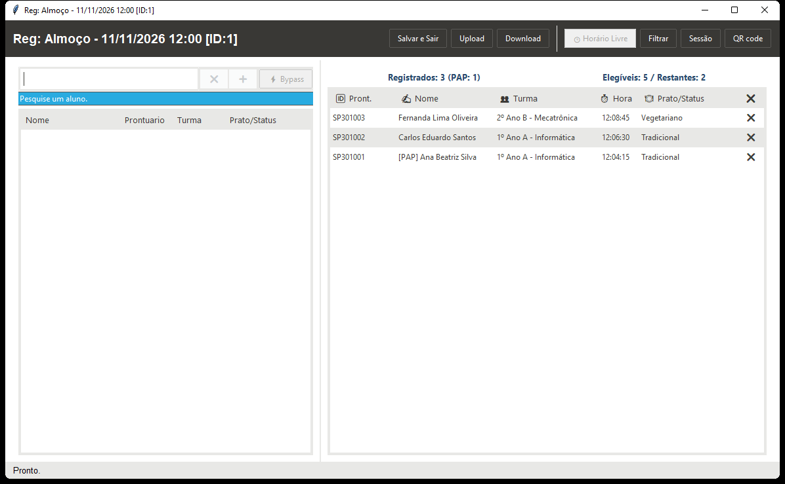
Botões da Barra Superior (da esquerda para a direita)
- Salvar e Sair: Salva
config/session.json(id_sessao, grupos#e estado deHorário Livre) e dispara upload final sincronizando os dados com a nuvem antes de encerrar.- Fechamento no
Xda janela: O sistema executa o upload bloqueante de sincronização antes de fechar, impedindo que consumos recém-lançados deixem de ser enviados ao Google Sheets.
- Fechamento no
- Upload: Envia imediatamente para o Google Sheets os consumos ativos (nas abas
Almoço,JantarouLanche) e os estornos (Consumo_Cancelados) da sessão atual. - Download: Baixa cadastros atualizados (
Discentes), reservas (DB), grade horária (Configuração) e lanches (Lanches) do Google Sheets para o SQLite local.- Download automático: Sempre que uma sessão é carregada na inicialização ou trocada, o Terminal dispara um download em segundo plano (com barra de progresso inferior) para manter as listas frescas sem travar a digitação.
- 🕒 Horário Livre (toggle): Alterna a flexibilização da trava de horário da grade para a sessão ativa (persiste automaticamente em
session.json). - Filtrar: Abre o diálogo avançado Filtrar Turmas e Categorias (
DialogoFiltroTurmas). - Sessão: Abre o diálogo Gerenciar Sessão de Refeição (
DialogoSessao) em 3 abas. - QR code: Inicia o Totem de Autoatendimento em processo independente (
--auto). Se não for possível iniciar o subprocesso, abre a janela embutida de fallback (JanelaSelfService).
5.2 Diálogo de Sessão em 3 Abas (DialogoSessao)
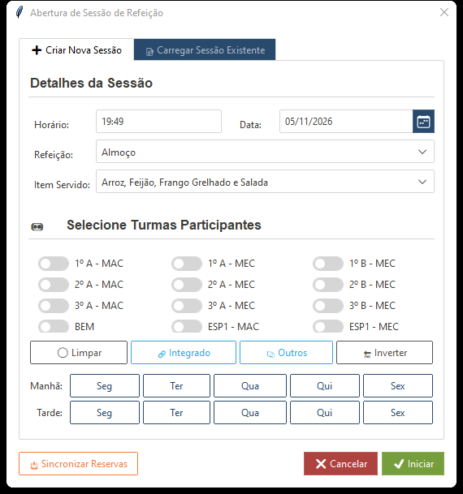
O diálogo reúne todas as ações de ciclo de vida da sessão, além do botão 📥 Sincronizar Nuvem no rodapé (útil se você acabou de adicionar reservas na planilha antes de abrir a sessão):
Aba 1 — ✏️ Editar Sessão Ativa
Visível quando já há uma sessão aberta. Permite alterar refeição, período, data, hora, item de lanche (em Lanche, com sincronização bidirecional caso digite um item novo) e os grupos autorizados, além de excluir a sessão ativa com segurança.
Aba 2 — ➕ Criar Nova Sessão
- Sugestão inteligente de refeição pelo relógio:
11:00até14:00➡️ sugereAlmoço17:30até21:30➡️ sugereJantar- Demais horários ➡️ sugere
Lanche
- Recálculo automático na alteração de data/refeição: Ao escolher data no calendário ou sair / pressionar
Enterno campo de data, o diálogo recalcula imediatamente:- Banner de Reservas Ativas: Mostra quantas reservas existem para aquela data/turno. Regra importante: não é permitido criar uma nova sessão de Almoço ou Jantar se não existir nenhuma reserva ativa para aquela data e turno (sessões de Lanche não exigem reservas).
- Slots interativos da
🕒 Grade de Horários do Dia: Lista as faixas configuradas emgrade_horarios.jsonpara aquele dia da semana e refeição com indicadores visuais:[● Agora]: faixa em vigor no horário atual.[✓ Filtrado]: clique sobre qualquer faixa para filtrar automaticamente apenas as turmas/categorias daquele horário.- Botões Todos os horários e 🕒 Horário Livre para alternar rapidamente o escopo.
- Listas separadas e 6 atalhos de seleção de grupos:
- Exibe separadamente os blocos 🏫 Turmas e 🏷️ Categorias (com filtro de busca rápida no topo da lista).
- Atalhos rápidos: 🕒 Grade do Dia (marca grupos previstos na grade), 📋 Com Reserva (marca apenas grupos que possuem alunos com reserva na data), 🔗 Integrado (marca turmas de
turmas_integrado.json), 📚 Outros (marca o complemento não integrado), 🔄 Inverter e ⚪ Limpar.
Aba 3 — 📂 Carregar Sessão Existente
- Lista todas as sessões gravadas no SQLite em uma tabela ordenável por cabeçalho (ID, Data, Refeição, Período, Hora, Item, Grupos) com campo de filtro ao vivo.
- Dê duplo clique em uma sessão (ou selecione e confirme) para carregá-la imediatamente.
5.3 Filtro Avançado de Turmas e Exceções # (DialogoFiltroTurmas)
Acessado pelo botão Filtrar na barra superior, permite controle granular de quais turmas/categorias exigem reserva prévia e quais entram livremente.
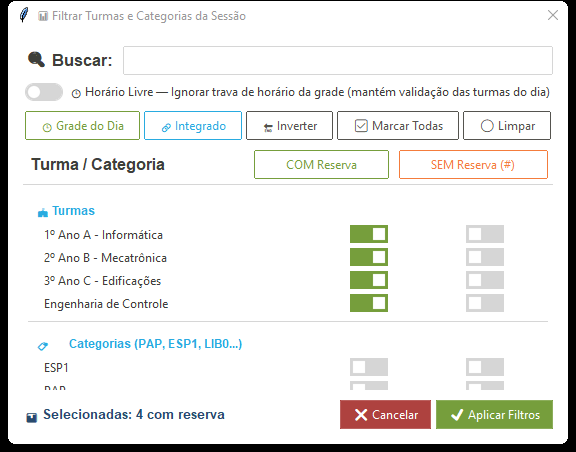
- Coluna
COM Reserva: Autoriza alunos do grupo que possuem reserva válida (ou entrada padrão em Lanche). - Coluna
SEM Reserva (#): Marca o grupo em Exceção (excecao_grupos) — em sessões de Almoço/Jantar, alunos dessas turmas ou categorias podem registrar a refeição mesmo sem ter feito reserva prévia (o prato é salvo comoSem Reserva (Grupo)). - Toggle por cabeçalho de coluna: Clicar diretamente no cabeçalho da coluna
COM ReservaouSEM Reserva (#)alterna em massa todas as caixas visíveis daquela coluna. - Atalhos e controles: Campo de busca instantânea por nome do grupo, interruptor
🕒 Horário Livre, e 5 botões rápidos: 🕒 Grade do Dia, 🔗 Integrado, 🔄 Inverter, ✅ Marcar Todas e ⚪ Limpar.
5.4 Painel de Busca e Registro (Esquerda)
Concentra a busca rápida na fila e os botões de confirmação.
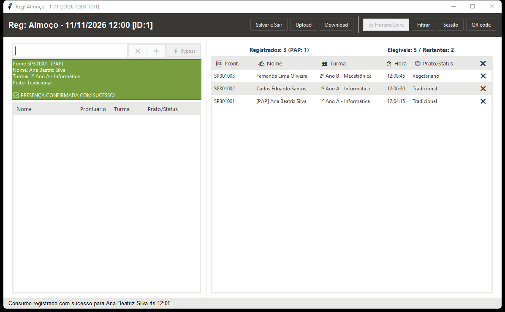
Como Funciona a Busca Inteligente
- Debounce e comprimento mínimo: A busca dispara automaticamente 100 ms após parar de digitar quando há pelo menos 2 caracteres.
- Correspondência híbrida: Detecta automaticamente se o termo parece matrícula/prontuário (score ≥ 85) ou nome completo/parcial (score ≥ 70) e exibe o resultado na tabela de elegíveis ordenável.
- Termos Curinga (listar toda a base disponível): Digite
todos,---,***ou..para exibir todos os alunos pendentes sem precisar digitar parte do nome. - Sufixo ponto final
.(pular_grupos): Adicionar um.ao final de qualquer busca (ex.:ana.outodos.) ativa temporariamente a busca global, ignorando os filtros de turma da sessão para localizar qualquer aluno ativo do banco na hora. - Cartão de Pré-visualização: Mostra Prontuário (exibindo tag
[PAP]em destaque quando o aluno possui categoria PAP permanente ou pontual), Nome, Turma e Prato previsto.
Atalhos de Teclado e Controles de Registro
| Ação / Tecla | Comportamento |
|---|---|
Return (Enter) ou botão ➕ Registrar | Registra o aluno selecionado respeitando as regras normais da sessão/grade (ou com Bypass se o toggle ⚡ Bypass estiver ativo). |
Shift + Return | Força Bypass imediato (pular_grupos=True) apenas para aquele registro (ignora filtro de grupos e grade horária, mantendo cota diária e status ativo). |
⚡ Bypass (toggle) | Mantém o modo Bypass ligado continuamente para os próximos cliques/Enters até ser desmarcado. |
Up / Down (setas no campo de busca) | Move a seleção na tabela de elegíveis sem tirar o cursor do campo de busca. |
Escape ou botão ❌ Limpar | Limpa o campo de busca e reinicia a listagem. |
| Duplo clique na linha | Confirma e registra o estudante clicado imediatamente. |
5.5 Painel de Status e Registrados (Direita) e Estorno Auditado
Exibe em tempo real o andamento da refeição:
- Contadores dinâmicos:
Registrados: N (detalhe categorias) | Elegíveis: T | Restantes: R. - Tabela de Registrados: Mostra
Matrícula,Nome,Turma,Hora,Prato(com prefixo[CAT]quando há categorias vinculadas) e a coluna de ação❌. Todas as colunas podem ser ordenadas clicando no cabeçalho. - Estorno / Cancelamento com Auditoria: Clique diretamente no ícone
❌da linha desejada, ou selecione a linha e pressioneDeleteouBackSpace. O sistema abrirá o diálogoConfirmar Cancelamento:
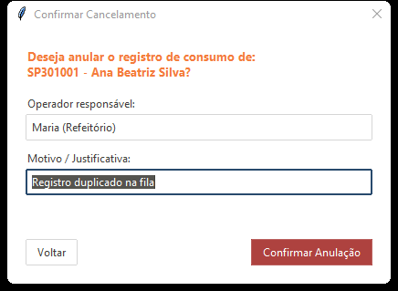
- Informe o Operador responsável e o Motivo / Justificativa e clique em Confirmar Anulação.
- O registro sai da lista de atendidos (via soft delete), devolve o aluno para elegíveis/restantes e libera sua cota diária, ficando registrado para auditoria na aba
Consumo_Cancelados.
5.6 Janela Embutida de Webcam / QR Code (Fallback JanelaSelfService)
Quando você clica no botão QR code da barra superior, o sistema inicia o Totem dedicado (--auto). Se por algum motivo do ambiente o subprocesso externo não iniciar, abre automaticamente uma janela interna acoplada com leitor de câmera + entrada manual:
- Webcam com ZBar: Lê QR Codes continuamente desenhando contorno verde ao redor do código detectado e borda verde de
10 pxno quadro durante o cooldown (20frames no sucesso,45frames no erro,30preventivo). - Entrada manual por matrícula ou nome: Padroniza matrículas para
IQ30XXXXX; se o usuário digitar um nome (≥ 3 caracteres), exibe sugestão em tempo real após 300 ms (limiar>= 75) e, ao pressionarEnter, confirma se houver correspondência única clara (>= 85, ambiguidade se< 95ou diferença< 10pontos para o 2º candidato).
⬅️ Capítulo 4 — Regras de Negócio | 📑 Índice | Capítulo 6 — Totem de Autoatendimento ➡️
Capítulo 6 — Totem de Autoatendimento (Autoatendimento)
O Totem de Autoatendimento (autoatendimento / --auto) é um módulo autônomo em ttkbootstrap projetado para operar em modo quiosque no acesso ao refeitório, combinando leitura por câmera (QR Code), leitor USB de código de barras / digitação direta, consulta interativa de horários para os alunos, painel CRUD completo de consumos e dashboard em tempo real.
⬅️ Capítulo 5 — Terminal do Operador | 📑 Índice | Capítulo 7 — Gerador de Crachás e Cartões ➡️
6.1 Inicialização Autônoma e Tratamento de Sessões
Ao abrir o Totem:
- Carrega as configurações de
config/settings.json(fullscreen,camera_on_start,require_pin_to_exit,feedback_delay_ms,camera_index). - Carrega
config/session.json; se não existir ou estiver inválido, procura automaticamente a sessão mais recente da data de hoje. - Liberação automática para datas retroativas: Se a sessão carregada tiver data diferente da data atual do computador, o Totem ativa automaticamente
ignorar_horario_grade=True(Horário Livre), permitindo lançamentos retroativos sem bloqueio pelo relógio. - Encerramento seguro: Ao sair pelo botão de fechar ou pelo menu Sair do Totem (protegido por PIN quando configurado), salva
session.jsone executa upload bloqueante para o Google Sheets com timeout máximo de 8 segundos para evitar perda de dados sem travar indefinidamente caso esteja sem internet.
6.2 Tela Principal do Totem (TotemWidget)
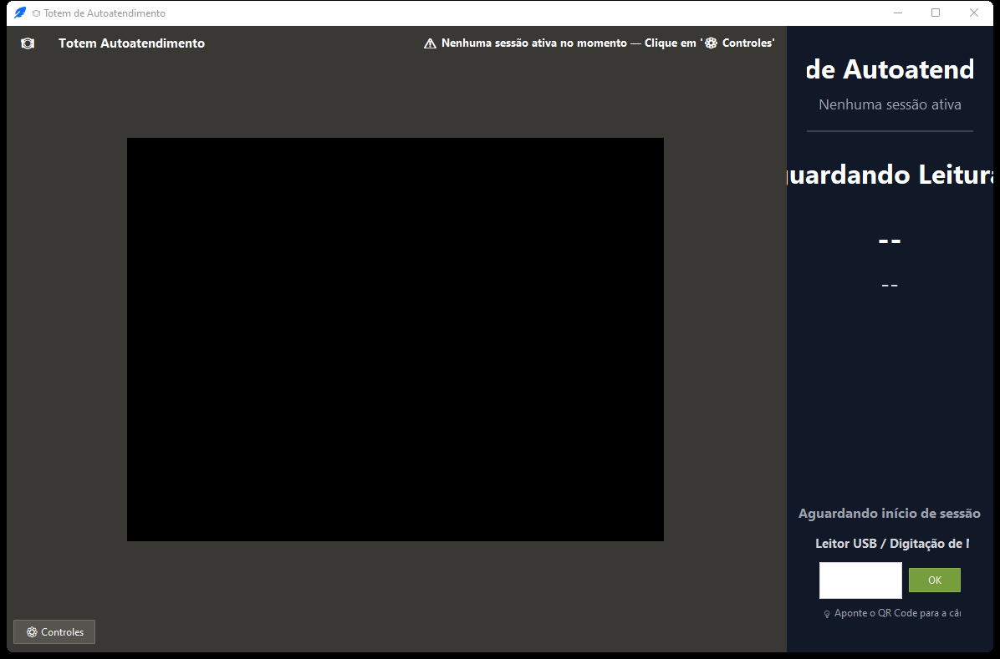
Elementos da Tela
- Lado Esquerdo (Captura e Controles):
- Área de Câmera (OpenCV + PyZbar): Decodifica QR Codes continuamente, desenhando moldura sobre o QR identificado e alterando a borda ao redor do vídeo conforme o resultado (verde no sucesso, vermelho no erro). Se
camera_on_startestiver desativado ou não houver câmera conectada, o campo USB/manual continua 100% operacional. - Botão
⚙️ Controles: Abre o menu flutuante do operador (protegido por PIN se configurado). - Botão
🕒 Horários por Turma: Abre a linha do tempo de horários das turmas sem precisar de senha, para consulta rápida dos estudantes na fila.
- Área de Câmera (OpenCV + PyZbar): Decodifica QR Codes continuamente, desenhando moldura sobre o QR identificado e alterando a borda ao redor do vídeo conforme o resultado (verde no sucesso, vermelho no erro). Se
- Lado Direito (Feedback e Leitor USB):
- Subtítulo da Refeição Ativa (ex.:
Almoço • 12/05/2026— clicável para abrir diretamente o diálogo🕒 Horários por Turma). - Painel de Status Visual (
padrao/sucesso/erro): Muda inteiramente a cor de fundo, exibe o ícone de status (Aguardando QR Code...,LIBERADO!ou erro), Nome, Turma, Prato/Cardápio, mensagem detalhada e retorna ao estado padrão apósfeedback_delay_ms(padrão1500 ms), emitindo o feedback sonoro configurado. - Campo USB / Digitação Manual: Recebe leituras de leitor de código de barras (que enviam
Enterao final) ou digitação manual. Redirecionamento global de teclado: mesmo que o foco do Windows saia da caixa de texto após um clique na tela, qualquer tecla alfanumérica pressionada na tela do Totem é redirecionada automaticamente para o campo de leitura.
- Subtítulo da Refeição Ativa (ex.:
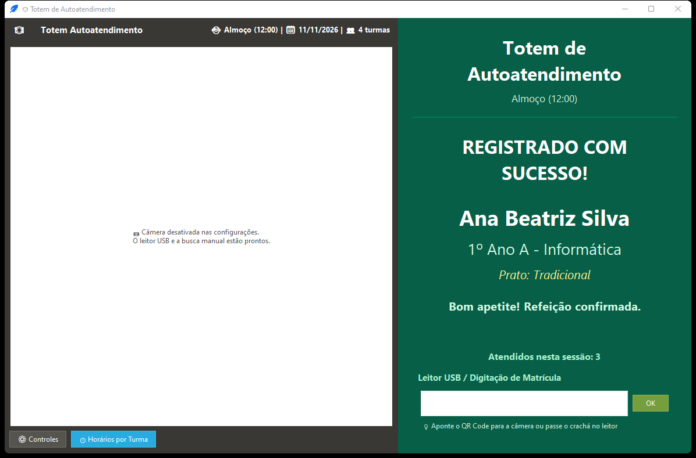
Como o Totem Identifica o Código Lido
- Se o texto lido contiver dígitos ou
IQ30..., normaliza paraIQ30XXXXXe chamaregistrar_consumo. - Se o retorno for "Estudante não encontrado", realiza busca fuzzy por nome entre os alunos elegíveis:
- Score ≥ 90 com resultado único, ou score ≥ 98, ou diferença ≥ 10 pontos sobre o segundo colocado ➡️ registra automaticamente;
- Caso contrário ➡️ exibe
Múltiplos resultados encontrados. Digite o prontuário.
6.3 Consulta Viva 🕒 Horários por Turma (DialogoGradeHorariosTotem)
Qualquer estudante (ou operador) pode abrir este modal clicando em 🕒 Horários por Turma ou sobre o subtítulo da refeição ativa.
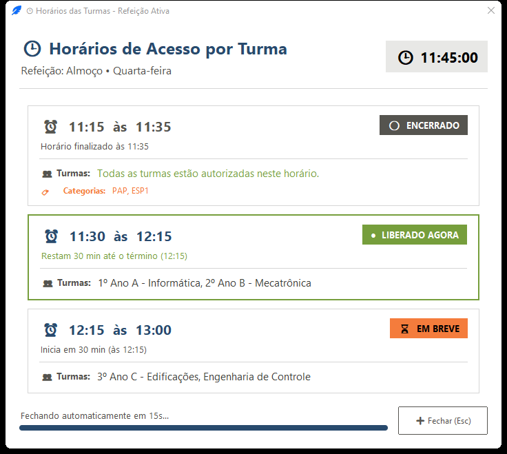
- Cartões em Linha do Tempo (Timeline): Exibe todos os slots configurados em
grade_horarios.jsonpara o dia da semana e refeição da sessão, com relógio atualizado segundo a segundo:● LIBERADO (HORÁRIO LIVRE): QuandoHorário Livreestá ligado na sessão.● LIBERADO AGORA: Slot ativo no minuto corrente (considerando ±5 min de tolerância), exibindo contagem regressiva em minutos até o fim do turno.⏳ EM BREVE: Slots futuros, mostrando quanto tempo falta para iniciar (Inicia em X minouXhYYmin).⚪ ENCERRADO: Faixas cujo horário + tolerância já terminou.
- Fechamento automático em 15s (e tecla
Esc): Uma barra regressiva fecha a janela após 15 segundos para o Totem não ficar preso em tela informativa. - Leitura contínua com o modal aberto (
permite_leitura_totem=True): Se um estudante passar o crachá no leitor USB (finalizado comEnter) enquanto o diálogo de horários estiver aberto na tela, a janela captura o código, fecha imediatamente e processa o consumo no Totem sem perder a leitura!
6.4 Proteção por PIN e Menu de Contexto do Operador
Existem 4 formas de abrir os controles administrativos na janela do Totem:
- Clicar no botão
⚙️ Controles; - Pressionar
F2; - Pressionar
Ctrl + M; - Clicar com o botão direito do mouse em qualquer ponto da tela (inclusive diretamente sobre o vídeo da câmera).
Se um PIN estiver configurado e require_pin_to_exit estiver ativo, abre primeiro o teclado DialogoPIN (suporta toque na tela e teclas 0–9, Enter, BackSpace, Esc).
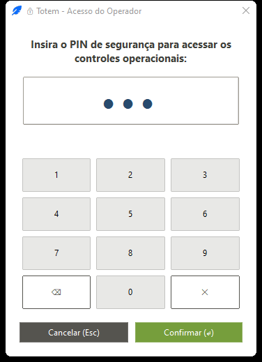
Após validado o PIN (ou imediatamente se não houver PIN), surge o menu flutuante completo do operador:
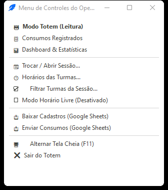
| Opção no Menu | Função |
|---|---|
| 🤖 Modo Totem (Leitura) | Retorna à tela principal de leitura QR/USB. |
| 📋 Consumos Registrados | Abre a visão CRUD de todos os atendimentos da sessão (AbaConsumos). |
| 📊 Dashboard & Estatísticas | Abre o painel analítico da sessão (AbaDashboard). |
| 📆 Trocar / Abrir Sessão... | Abre o diálogo completo DialogoSessao para criar, editar ou trocar a sessão ativa do Totem. |
| 🕒 Horários das Turmas... | Abre o modal visual DialogoGradeHorariosTotem. |
| ☑️ Filtrar Turmas da Sessão... | Abre o DialogoFiltroTurmas (COM Reserva / SEM Reserva # / Horário Livre). |
| Modo Horário Livre (check) | Liga/desliga ignorar_horario_grade diretamente do menu e persiste em session.json. |
| 📥 Baixar Cadastros (Google Sheets) | Baixa alunos, reservas, grade horária e lanches da nuvem em segundo plano. |
| 📤 Enviar Consumos (Google Sheets) | Faz upload imediato dos consumos e cancelamentos da sessão. |
🖥️ Alternar Tela Cheia (F11) | Liga/desliga fullscreen (tecla Esc também sai do modo tela cheia). |
| ❌ Sair do Totem | Salva estado, envia pendências para o Google Sheets (até 8s) e encerra o módulo. |
6.5 Visão 📋 Consumos Registrados (AbaConsumos)
Permite inspecionar, corrigir e lançar consumos manualmente direto do próprio Totem (ideal para quando o atendente está atuando junto ao quiosque).
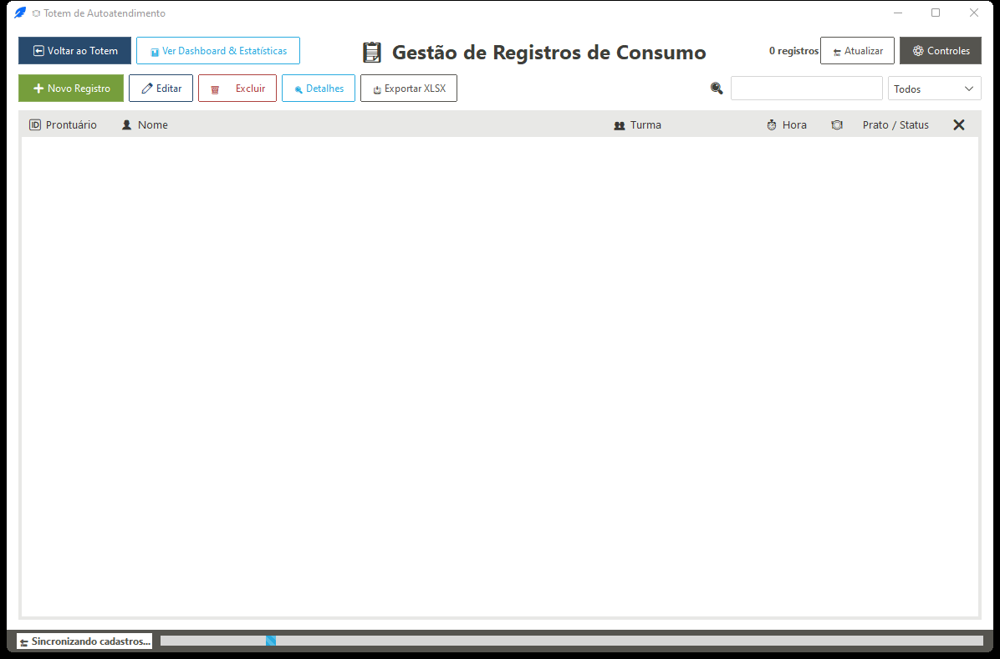
Barra Superior e Filtros
- Navegação rápida: ⬅ Voltar ao Totem, 📊 Ver Dashboard & Estatísticas, 🔄 Atualizar, ⚙️ Controles.
- Busca ao vivo (matrícula, nome, turma ou prato) + filtro suspenso (
Todos,Com Reserva,Sem Reserva) + contador dinâmico (N registrosouX de Y registros). - Tabela ordenável com coluna de ação rápida
❌no canto direito. - Atalhos da tabela: Duplo clique na linha abre Detalhes; botão direito abre menu de contexto (
Ver Detalhes,Editar Horário / Prato,Excluir Registro);DeleteouBackSpaceabre o diálogo de estorno auditado.
Sub-diálogos de CRUD no Totem
- ➕ Novo Registro (
DialogoNovoConsumo): Busca alunos ativos, exibe lista de candidatos ordenável, permite preencher Horário e Prato/Cardápio, e inclui opção de registro com regras normais ou liberação avulsa (bypass de grupo/horário).
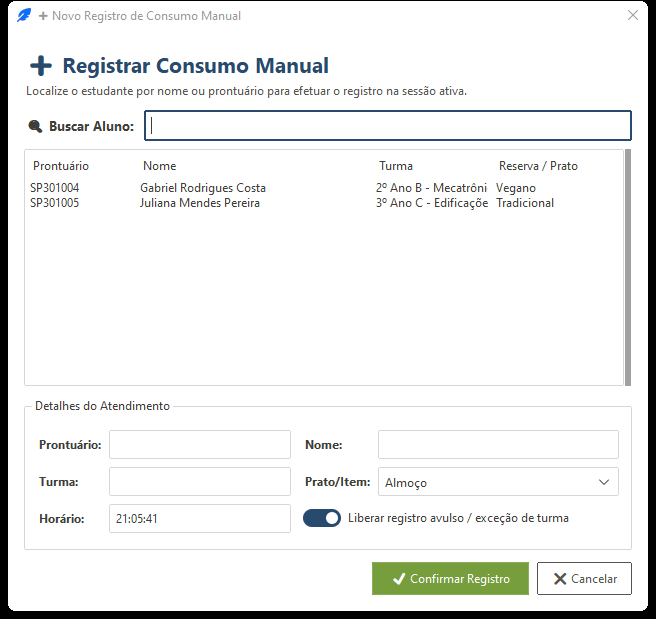
- ✏️ Editar (
DialogoEditarConsumo): Altera o horário gravado (hora_consumo) e o prato da reserva vinculada (se o consumo anterior era avulso sem reserva vinculada, o sistema cria/associa automaticamente uma reserva na data com o prato informado para manter consistência nos relatórios). - 🗑️ Excluir (
DialogoConfirmarCancelamento): Executa estorno via soft delete solicitando Operador responsável e Motivo / Justificativa. - 🔍 Detalhes (
DialogoDetalhesConsumo): Cartão completo exibindo Prontuário, Nome, Turma, Horário de Consumo, Prato/Status e ID interno do registro, com botões rápidos para Editar ou Excluir diretamente dali.
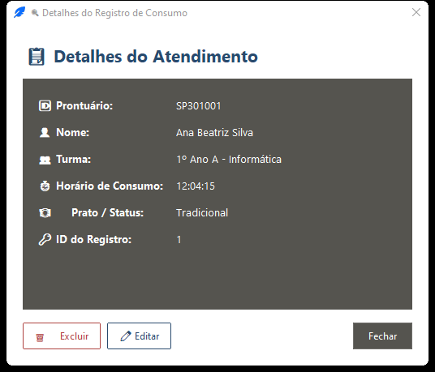
- 📥 Exportar XLSX: Gera a planilha completa da sessão (incluindo aba
Canceladosse houver estornos) diretamente na pasta Documentos.
6.6 Visão 📊 Dashboard & Estatísticas (AbaDashboard)
Painel de acompanhamento instantâneo da fila atual dentro do Totem.
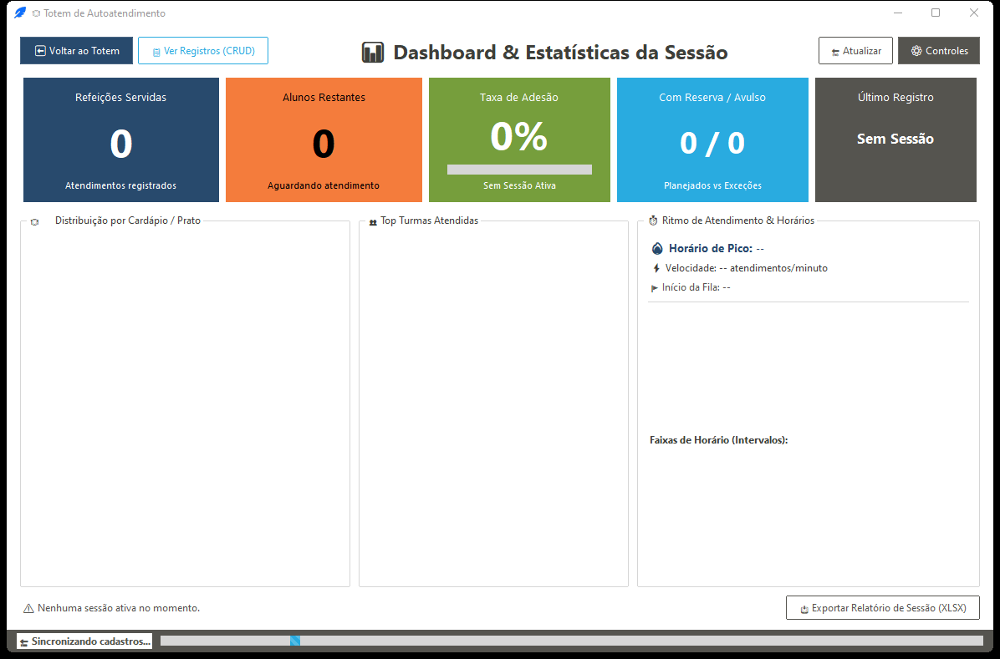
- 5 Cartões de KPI:
- Refeições Servidas (total de consumos ativos na sessão);
- Alunos Restantes (elegíveis ainda não atendidos);
- Taxa de Adesão (porcentagem de atendidos sobre esperados + barra de progresso e resumo das principais categorias atendidas, ex.:
PAP: N); - Com Reserva / Avulso (
c_res / s_rese % com reserva); - Último Registro (nome e horário do último estudante atendido).
- 3 Painéis Analíticos:
- Distribuição por Cardápio / Prato (barras proporcionais por prato);
- Top Turmas Atendidas (até as 6 turmas com maior volume na sessão);
- Ritmo de Atendimento & Horários (Horário de Pico em janelas de 15 minutos, Velocidade Média em atendimentos/minuto, Primeiro Atendimento e últimos 5 intervalos de 15 min).
- Rodapé: Resumo da sessão ativa (
Refeição,Hora prevista,Item,Data,ID Sessão) e botão 📥 Exportar Relatório de Sessão (XLSX) salvando na pasta Documentos.
⬅️ Capítulo 5 — Terminal do Operador | 📑 Índice | Capítulo 7 — Gerador de Crachás e Cartões ➡️
7. Gerador de Crachás (registro.cards)
O Gerador de Crachás é um aplicativo integrado para produzir cartões de identificação estudantil com QR Code em lote, prontos para impressão em papel A4 comum ou cartão e recorte em guilhotina.
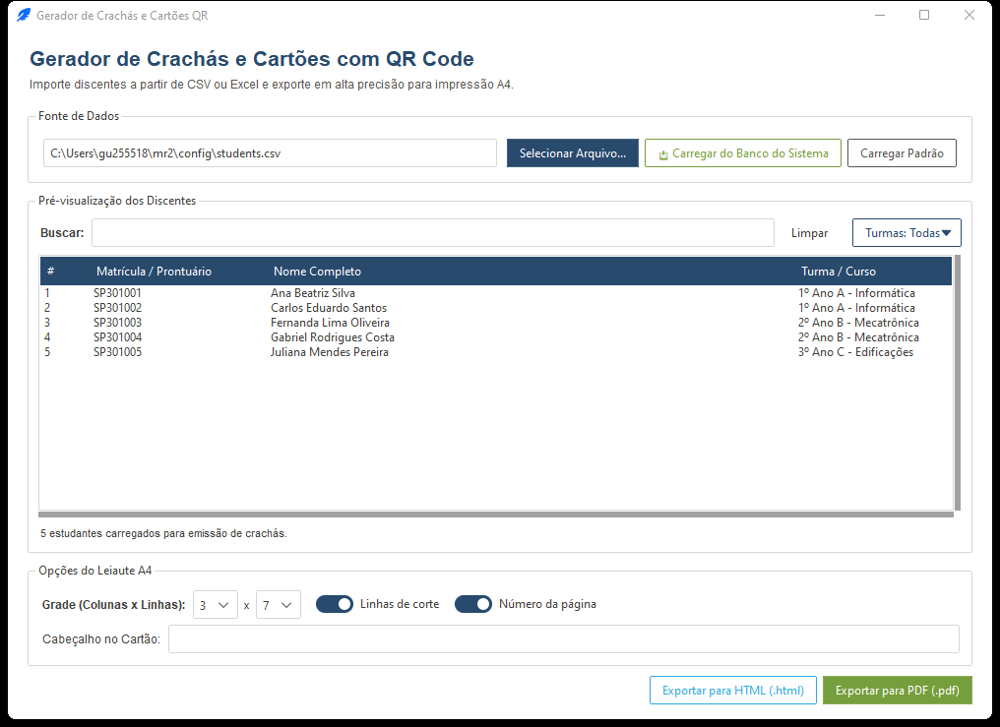
7.1. Como Abrir o Gerador
Você pode iniciar o módulo por três caminhos:
- Pelo Menu Inicial (
uv run python -m registro): clique no botão 🪪 Gerador de Crachás.... - Diretamente pelo argumento de linha de comando:
```bash uv run python -m registro --cards ```
- Executando o pacote de crachás isoladamente:
```bash uv run python -m registro.cards ```
7.2. Fontes de Dados Suportadas
Na parte superior da janela, escolha de onde virá a lista de estudantes:
| Fonte | Como funciona | Detalhes automáticos |
|---|---|---|
| Banco de Dados (SQLite) | Lê diretamente a base local do sistema (config/registro.db ou outro .db escolhido). | Traz os estudantes ativos com suas respectivas turmas (tipo="turma"), sem precisar exportar planilhas antes. |
| Planilha (CSV / XLSX) | Permite abrir qualquer arquivo .csv ou .xlsx (Excel) salvo no computador. | Detecta automaticamente encoding (utf-8-sig, utf-8, latin-1, cp1252), delimitador CSV (,, ;, \t, |) e nomes flexíveis de colunas. |
Colunas aceitas automaticamente em planilhas externas: variações de pront / prontuario / matricula / ra, nome / estudante / aluno, turma / curso / grupo, e opcionalmente ativo / status / situacao.
7.3. Filtros e Seleção de Estudantes
Depois de clicar em Carregar Dados, utilize os filtros para emitir crachás apenas para quem precisa (por exemplo, somente turmas ingressantes ou segunda via):
- Busca instantânea: digite parte do nome, matrícula/prontuário ou nome da turma.
- Filtro multiseleção de Turmas: marque ou desmarque as turmas desejadas nos seletores individuais, ou use os botões rápidos Todas / Nenhuma.
- Seleção fina na lista: clique nos estudantes desejados (use
Ctrl+CliqueouShift+Cliqueou os botões de seleção em lote da barra) — o rodapé mostra quantos estudantes serão incluídos na impressão.
7.4. Configuração de Layout e Impressão (A4)
O painel de layout ajusta o formato físico da folha A4:
- Grade (Colunas × Linhas):
- Colunas: de 2 a 4 colunas por folha.
- Linhas: de 4 a 10 linhas por folha.
- Exemplo clássico: 3 colunas × 5 linhas = 15 crachás por página A4.
- Título do Cabeçalho: texto institucional exibido no topo de cada cartão (no exportador PDF, o título do cabeçalho tem limite de 40 caracteres para evitar estouro lateral na área do cartão).
- Subtítulo e Cores: personalize o subtítulo identificador (ex.: Refeitório Estudantil) e a cor de destaque das bordas/faixas.
- Guias de Recorte e Paginação:
- Linhas de corte: desenha marcas/linhas finas de referência entre as células para facilitar o corte na guilhotina ou tesoura.
- Numeração de páginas: imprime o número da página no rodapé da folha A4, útil ao imprimir lotes grandes para várias turmas.
7.5. O QR Code Gerado e Formatos de Exportação
Conteúdo do QR Code
Cada crachá carrega um QR Code contendo exclusivamente o prontuário/matrícula puro do estudante (por exemplo, SP301001), sem URLs ou prefixos extras. Isso garante compatibilidade imediata com:
- A webcam do Totem de Autoatendimento e do módulo Self-Service do Operador;
- Leitores USB de código de barras 2D/QR no Terminal do Operador ou no campo de entrada do Totem.
Formatos de Saída
| Formato | Tecnologia | Quando escolher |
|---|---|---|
PDF Vetorial (.pdf) | ReportLab | Recomendado para impressão em gráfica ou impressora do campus: QR Codes nítidos sem serrilhado, medidas exatas em milímetros e linhas de corte precisas. |
HTML (.html) | CSS Grid | Gera um único arquivo web auto-contido que abre no navegador para conferência visual rápida ou impressão direta via Ctrl+P (lembre de ativar "Gráficos de segundo plano" nas opções de impressão do navegador). |
- Anterior: 6. Totem de Autoatendimento
- Próximo: 8. Rotinas do Dia a Dia
8. Rotinas do Dia a Dia
Este capítulo consolida os fluxos práticos recomendados para a equipe do refeitório e a coordenação técnica executarem o sistema com tranquilidade em cada turno.
8.1. Checklist Pré-Abertura do Refeitório
Execute esta preparação antes de liberar a fila para os alunos:
- Sincronizar a base e as reservas do dia (no Painel Administrativo):
- Abra a aba Importação.
- Se a planilha de estudantes teve matrículas novas ou trocas de turma no SUAP, importe o CSV de Estudantes ou clique em Baixar do Google.
- Na seção de Reservas, carregue o CSV do dia ou baixe as reservas atualizadas da planilha Google para que Almoço e Jantar estejam no banco local.
- Conferir casos especiais:
- Na aba Reservas, valide que ninguém ficou sem reserva por falha de digitação; caso falte alguém autorizado, use Nova Reserva.
- Na aba Turmas, confirme se novos alunos ingressantes estão vinculados às turmas corretas (para não serem bloqueados pela Grade de Horários no Totem).
- Abrir a sessão no equipamento de registro:
- No Terminal do Operador ou pelo Menu de Controles do Totem de Autoatendimento (
F2/Ctrl+M/ botão direito ➔ Trocar / Abrir Sessão...), abra ou retome a sessão da refeição correspondente (Almoço, Jantar ou Lanche). - Para Lanche, preencha ou selecione o Item servido (ex.:
Achocolatado e Biscoito Maisena). - Selecione o Período (ex.:
Integral,Matutino) e marque todas as turmas/grupos autorizados (ou o grupo geral correspondente).
- No Terminal do Operador ou pelo Menu de Controles do Totem de Autoatendimento (
Para sessões de Almoço ou Jantar, o sistema exige que exista pelo menos uma reserva ativa para a data e turno escolhidos no banco de dados antes de liberar a criação da sessão.
8.2. Operação Durante o Pico da Fila
Cenário A: Operação com Totem de Autoatendimento + Fiscalização
- Deixe o Totem em tela cheia (
F11) com a câmera ativa ou leitor USB posicionado em um apoio firme. - Os alunos aproximam o crachá (ou digitam o prontuário no leitor/campo manual — o Totem redireciona automaticamente teclas alfanuméricas para a caixa de entrada caso o foco saia dela):
- Tela Verde + Bipe agudo: passagem liberada.
- Tela Laranja/Vermelha + Bipe grave: o aluno para ao lado sem travar a fila e a equipe verifica o motivo mostrado na mensagem (sem reserva, fora do horário da turma na grade, ou passagem duplicada).
- Se uma turma foi liberada antecipadamente pela coordenação escolar (ex.: professor faltou e a turma saiu 15 minutos antes):
- No Totem, pressione
F2ouCtrl+M(ou clique com o botão direito na área do vídeo ➔ Filtrar Turmas da Sessão...) e dê Exceção (ou liberação SEM Reserva#) apenas para aquela turma específica, sem desligar a proteção para o resto da escola — ou ative o Modo Horário Livre caso haja mudança geral de rotina no dia.
- No Totem, pressione
Cenário B: Operação Assistida pelo Operador
- Mantenha o cursor no campo Busca / Prontuário.
- Passe o leitor de código de barras ou digite o código numérico do prontuário (não precisa digitar
IQouSPno início) e tecleEnter:- Use
↓e↑para alternar entre candidatos da lista,Enterpara registrar o selecionado,Shift+Enterpara forçar bypass de restrições (com critério do operador) ouEscpara limpar a busca. - Se a busca por nome retornar vários homônimos (ex.: vários
Lucas), filtre adicionando a turma após vírgula ou ponto (ex.:lucas, 1A) ou clique duas vezes na linha certa antes de registrar.
- Use
8.3. Tratando Exceções Comuns na Hora
| Situação | O que fazer na hora | Onde ajustar |
|---|---|---|
| Aluno esqueceu o crachá | No Terminal do Operador, busque pelo Nome (ou peça para digitar os números do prontuário) e confirme após conferir documento ou turma. | Terminal do Operador |
| Aluno pegou refeição e houve erro / dupla leitura | Clique no consumo na lista à direita do Terminal (e pressione Delete/BackSpace ou o botão cancelar) ou na aba Consumos do Totem. Informe Operador e Motivo no diálogo auditado. | Diálogo de Cancelamento |
| Aluno está na lista errada de reserva (ex.: Vegetarianos vs Tradicional) | Edite a reserva no Painel Administrativo (aba Reservas, duplo clique) ou edite o registro na aba Consumos do Totem (Duplo Clique). | Painel Admin / Totem |
| Turma autorizada na portaria não aparece ou está fora da grade | Abra Filtrar Turmas da Sessão... (no Terminal ou via menu de contexto do Totem) e marque os grupos desejados ou ative Horário Livre. | Totem / Terminal |
| Aluno ingressante acabou de chegar sem QR Code | Cadastre o aluno na aba Alunos do Painel, gere o crachá unitário filtrando por ele no Gerador de Crachás, ou lance usando # temporariamente no Terminal se necessário. | Gerador de Crachás |
8.4. Fechamento do Turno e Sincronização em Nuvem
Ao encerrar o atendimento da refeição:
- No Totem (
AppSelfService):- Abra o menu (
F2,Ctrl+Mou botão direito) ➔ Consumos Registrados para revisar rapidamente o total de atendimentos e verificar se existe algum lançamento#não identificado ou cancelamento pendente de justificativa. - No mesmo menu, clique em Enviar Consumos (Google Sheets) para forçar o envio imediato dos registros e cancelamentos caso a internet tenha oscilado durante o horário de pico.
- Confirme na aba Dashboard & Estatísticas (e na aba Consumos) se o contador de pendentes zerou e se o histórico de sincronizações registra sucesso.
- Abra o menu (
- No Terminal do Operador:
- Confira o contador de registrados no painel direito.
- Quando aplicável, gere uma cópia da sessão em planilha pelo botão de exportação (.xlsx com abas Resumo, Consumos e Reservas, ou consolidação no Painel Administrativo).
Em refeições de Lanche, o envio para o Google Sheets pelo Totem dispara um envio em segundo plano da aba específica de lanches. Aguarde a barra de progresso no rodapé concluir antes de fechar o programa.
8.5. Rotina Semanal de Manutenção e Segurança
Uma vez por semana (por exemplo, toda sexta-feira após o último turno):
- Abra o Setup e Configurações ➔ aba Backups & Restauração.
- Crie um Backup Manual para gerar um arquivo compactado
.zipdatado na pastabackups/(contendo toda a pastaconfig/, exceto temporários.tmp,.lock,-wale-shm) e copie o arquivo mais recente para um pendrive ou pasta institucional em nuvem. - Verifique se o limite de retenção de backups e o espaço em disco estão adequados e confira na aba Checklist & Início se a conexão com o Google Sheets continua válida.
- Na aba Dashboard do Painel Administrativo, exporte o consolidado de consumos da semana caso a gestão escolar arquive relatórios locais em
.xlsx.
- Anterior: 7. Gerador de Crachás
- Próximo: 9. Atalhos de Teclado e Referência Rápida
9. Atalhos de Teclado e Referência Rápida
Esta seção reúne em formato de consulta direta apenas os atalhos, gestos, curingas, comandos CLI e arquivos realmente implementados e verificados no sistema.
9.1. Atalhos e Ações do Terminal do Operador (--reg)
| Atalho / Gesto | Onde funciona | Ação |
|---|---|---|
Enter | Campo de busca | Registra o estudante selecionado (ou primeiro elegível compatível). |
Shift+Enter | Campo de busca | Registra ignorando bloqueios/travas (forcar_bypass=True), quando autorizado pelo operador. |
↓ / ↑ | Campo de busca | Move a seleção para baixo ou para cima na tabela de elegíveis sem tirar o cursor da busca. |
Esc | Campo de busca | Limpa o texto digitado na busca imediatamente. |
Duplo Clique | Tabela de elegíveis | Seleciona e registra o estudante clicado. |
Delete / BackSpace | Tabela de registrados (painel direito) | Aciona o fluxo de desfazer/cancelar o consumo selecionado (com diálogo auditado). |
Clique no cabeçalho | Qualquer tabela (TreeviewSimples) | Ordena a tabela crescente/decrescente com seta indicadora (▲ / ▼). |
9.2. Atalhos e Gestos do Totem de Autoatendimento (--auto)
| Atalho / Gesto | Contexto / PIN | Ação |
|---|---|---|
F2 ou Ctrl+M | Qualquer tela do Totem | Abre o Menu de Contexto / Controles do Operador (ações internas exigem PIN quando configurado). |
| Botão direito | Qualquer área da janela ou vídeo da câmera | Abre o Menu de Contexto / Controles do Operador na posição do cursor. |
| Botão direito | Tabela de Consumos | Abre o menu de contexto do registro selecionado (detalhes/edição/cancelamento). |
| Clique no subtítulo da refeição ativa | Tela principal de leitura (Modo Totem) | Abre a janela pública Horários de Acesso por Turma com fechamento automático em 15 segundos. |
F11 | Janela do Totem | Alterna o modo Tela Cheia (pode exigir PIN para ativar/alternar conforme política de segurança). |
Esc | Janela principal / Diálogos | Sai do modo Tela Cheia (pode exigir PIN se require_pin_to_exit estiver ativo) ou fecha o diálogo Horários das Turmas / PIN. |
Digitação alfanumérica | Tela principal de leitura (mesmo fora do foco) | Redireciona automaticamente as teclas para a caixa de entrada manual, evitando perda de leitura de scanners USB. |
Enter | Caixa manual do Totem / Diálogo de PIN | Submete a matrícula digitada ou confirma o PIN informado (Return / KP_Enter). |
Duplo Clique | Aba Consumos / Lista de candidatos manual | Abre os detalhes/edição do consumo ou confirma o candidato selecionado no lançamento manual. |
Delete / BackSpace | Aba Consumos / Diálogo de PIN | Cancela/exclui o consumo selecionado (aba Consumos) ou apaga o último dígito no teclado de PIN. |
0–9 (teclado físico) | Diálogo de PIN | Insere dígitos no campo mascarado sem precisar tocar nos botões da tela. |
9.3. Interações Rápidas do Painel Administrativo (--painel)
| Gesto / Interação | Aba / Diálogo | Ação |
|---|---|---|
Duplo Clique | Aba Alunos, aba Reservas ou diálogo Vincular Aluno | Abre diretamente o formulário de edição do item (ou conclui vinculação na turma). |
Seleção em menus suspensos (Combo) | Todas as abas com filtros | Atualiza a filtragem instantaneamente sem precisar clicar em "Aplicar". |
Clique no cabeçalho | Todas as tabelas (TreeviewSimples) | Ordena dinamicamente pela coluna clicada (▲ / ▼). |
9.4. Curingas e Marcadores Especiais de Busca
Utilizáveis na barra de pesquisa do Terminal do Operador, nas abas de busca do Painel Administrativo e nos filtros com busca integrada:
| Sintaxe | Onde usar | Comportamento |
|---|---|---|
todos, ---, ***, .. | Campo de busca do Terminal / Painel | Lista todos os estudantes disponíveis no contexto atual (ignorando filtro de texto). |
<nome>, <turma> ou <nome>. <turma> | Busca de estudantes | Filtra simultaneamente pelo nome e pela turma usando separador por vírgula ou ponto (ex.: ana, 1º ano). |
<termo>. (com ponto final) | Busca do Terminal | Restringe a correspondência usando tratamento de sufixo . para refinar grupo/prontuário exato. |
# (cerquilha) | Terminal do Operador | Registro avulso / Sem Reserva para alunos ou visitantes autorizados fora da listagem nominal padrão, contabilizado separadamente como # nos relatórios e na sincronização. |
Apenas dígitos (301001) | Leitor / Busca | O sistema normaliza automaticamente prefixos como IQ, SP, IQXX (IQXX ➔ IQ30) para comparar o código sem exigir digitação manual do prefixo completo. |
9.5. Comandos de Linha de Comando (CLI)
Execute a partir da raiz do projeto usando uv run python -m registro:
| Comando | Módulo Iniciado | Descrição |
|---|---|---|
uv run python -m registro | Menu Inicial | Abre a janela lançadora com os 5 módulos. |
uv run python -m registro --reg (ou /reg) | Terminal do Operador | Abre direto a tela de atendimento por fila/prontuário. |
uv run python -m registro --painel (ou /painel) | Painel Administrativo | Abre direto a gestão de alunos, turmas, reservas, importação e dashboard. |
uv run python -m registro --auto (ou /auto) | Totem de Autoatendimento | Abre direto o totem com câmera/QR, PIN e fila offline. |
uv run python -m registro --setup (ou /setup) | Setup e Configurações | Abre a central de configurações, Google Cloud, PIN, grade horária e backups. |
uv run python -m registro --cards (ou /cards) | Gerador de Crachás | Abre a ferramenta de criação de cartões QR em PDF/HTML. |
uv run python -m registro --help | Ajuda CLI | Mostra a lista de opções suportadas no terminal. |
uv run python -m registro.cards | Gerador de Crachás | Executa o gerador diretamente pelo submódulo dedicado. |
9.6. Badges de Status e Indicadores Visuais
| Badge / Cor | Local | Significado |
|---|---|---|
| LIBERADO AGORA (Verde) | Horários por Turma (Totem) | A janela horária desta turma/categoria está aberta neste minuto. |
| EM BREVE (Laranja) | Horários por Turma (Totem) | A janela ainda vai começar hoje (exibe contagem em minutos até o início). |
| ENCERRADO (Cinza) | Horários por Turma (Totem) | O horário dessa turma já terminou no turno de hoje. |
| PENDENTE SYNC (Laranja) | Consumos do Totem / Histórico | Registro salvo no SQLite aguardando envio com sucesso ao Google Sheets. |
# / Sem Reserva | Terminal / Totem / Consumos | Atendimento realizado como exceção sem reserva prévia associada. |
| Ativo / Inativo | Alunos (Painel) | Estudantes inativos permanecem no histórico (para auditoria de consumos antigos), mas não aparecem para novas sessões nem reservas. |
9.7. Diretórios e Arquivos Gerados pelo Sistema
| Caminho | Conteúdo |
|---|---|
config/registro.db | Banco de dados SQLite principal (estudantes, grupos, sessoes, reservas, consumos, sync_logs). |
config/settings.json | Preferências de áudio (frequências e durações de bipe), totem (tela cheia, câmera ao iniciar, exigência de PIN, índice da câmera, tempo de feedback) e hash/salt do PIN PBKDF2-HMAC-SHA256. |
config/session.json | Estado persistido da sessão em andamento (id_sessao, excecao_grupos, ignorar_horario_grade). |
config/grade_horarios.json | Escalonamento semanal por dia (segunda..domingo) e refeição (almoco, jantar, lanche) com faixas inicio/fim, turmas e categorias. |
config/lanches.json | Lista predefinida de itens exibidos na caixa combinada quando a sessão for Lanche. |
config/presets_turmas.json | Predefinições de grupos de turmas no diálogo de sessão. |
config/turmas_integrado.json | Lista das turmas usadas pelo botão rápido Integrado nos filtros. |
config/mapeamento_colunas.json | Dicionário personalizável de sinônimos de cabeçalhos de planilhas importadas. |
config/spreadsheet.json | ID da planilha do Google Sheets salva pelo Setup. |
config/credentials.json | Credenciais OAuth 2.0 ou Service Account baixadas do Google Cloud. |
config/token.json | Token de autorização OAuth gerado automaticamente após o login do navegador. |
backups/ | Arquivos .zip datados criados pelo gerenciador de backups contendo a pasta config/ (sem arquivos .tmp, .lock, -wal ou -shm). |
logs/ | Logs rotativos (5 MB por arquivo, até 5 backups por módulo) úteis para suporte e diagnóstico. |
- Anterior: 8. Rotinas do Dia a Dia
- Próximo: 10. Solução de Problemas e FAQ
10. Solução de Problemas e Perguntas Frequentes (FAQ)
Consulte este guia rápido caso encontre mensagens de bloqueio, falhas de câmera ou erros de sincronização durante o uso diário.
10.1. Integração Google Cloud e Planilhas
"Arquivo de credenciais não encontrado em config/credentials.json"
- Causa: O aplicativo tentou sincronizar ou autenticar no Google Drive/Sheets sem o arquivo JSON do projeto Google Cloud na pasta
config/. - Como resolver:
- Abra Configurações & Início Rápido (
--setup) ➔ aba Google Cloud & Planilha. - Clique em Importar
credentials.jsone selecione o arquivo baixado no Google Cloud Console (cliente Desktop OAuth ou Service Account). - Clique em Testar Conexão / Autenticar.
- Abra Configurações & Início Rápido (
Erro de autenticação expirada ou invalid_grant (token.json)
- Causa: O token de acesso salvo em
config/token.jsonfoi revogado, expirou em projeto em modo de teste do Google, ou pertence a outra conta. - Como resolver:
- No Setup ➔ aba Google Cloud & Planilha, use a ação para limpar/revogar o token atual (ou remova o arquivo
config/token.jsonmanualmente com o sistema fechado). - Clique em Autenticar novamente para abrir o navegador e autorizar a conta institucional correta.
- No Setup ➔ aba Google Cloud & Planilha, use a ação para limpar/revogar o token atual (ou remova o arquivo
A sincronização falha em horários sem internet no refeitório
- Comportamento normal: O Totem de Autoatendimento continua operando normalmente offline usando o SQLite local (
config/registro.db). - Os registros pendentes de envio ficam sinalizados na aba Consumos e são enfileirados para o próximo envio automático ou quando você acionar Enviar Consumos (Google Sheets) pelo Menu de Controles (
F2,Ctrl+Mou botão direito) após a conexão voltar.
10.2. Regras de Sessão, Reservas e Grade Horária
Não consigo abrir uma sessão de Almoço ou Jantar
- Causa: Para Almoço e Jantar, o sistema verifica se existe ao menos 1 reserva ativa (não cancelada) no banco de dados para aquela data e turno (
almoco=Trueoujantar=True). - Como resolver:
- Abra o Painel Administrativo ➔ aba Importação e carregue a planilha de reservas daquele dia (ou baixe do Google Sheets).
- Confira na aba Reservas se a data exibida corresponde ao dia da sessão que deseja abrir.
O aluno tem reserva, mas o Totem bloqueia dizendo que está fora do horário
- Causa: O relógio atual do computador está fora de qualquer intervalo liberado na Grade Horária (
config/grade_horarios.json) para a turma ou categoria do aluno naquele dia da semana e refeição. - Como resolver:
- Se a turma inteira foi liberada excepcionalmente hoje: no Totem, abra o Menu de Controles (
F2,Ctrl+Mou botão direito) ➔ Filtrar Turmas da Sessão... e libere aquela turma, ou ative Modo Horário Livre para ignorar a trava da grade mantendo as turmas do dia. - Se a janela permanente mudou: abra o Setup ➔ aba Grade de Horários e ajuste os horários daquele dia da semana.
- Para o aluno conferir sua janela sozinho: basta clicar no subtítulo da refeição ativa na tela inicial do Totem para abrir Horários de Acesso por Turma.
- Se a turma inteira foi liberada excepcionalmente hoje: no Totem, abra o Menu de Controles (
"Aluno não aparece para registro" mesmo existindo no cadastro
- Verificações rápidas:
- No Painel Administrativo ➔ aba Alunos, confira se o cadastro não está marcado como Inativo.
- Para sessões de Almoço / Jantar, confira na aba Reservas se há reserva válida naquela data e se não foi cancelada.
- Confira se as turmas marcadas na sessão atual (Filtrar Turmas da Sessão...) incluem a turma (ou categoria) do estudante.
Ao escolher outra data no diálogo de Sessão, a seleção de turmas muda
- Comportamento esperado: Quando você altera a Data dentro do diálogo Abrir / Gerenciar Sessão, o sistema recalcula automaticamente qual é o dia da semana correspondente e aplica a seleção padrão da Grade do Dia daquele dia da semana.
10.3. Hardware: Webcam, Leitor USB e Áudio
A webcam não abre ou abre a câmera errada (ex.: câmera embutida em vez da USB)
- Como resolver:
- Abra Configurações & Início Rápido (
--setup) ➔ aba Totem & Segurança. - Altere o Índice da Câmera (tente
0,1ou2se houver múltiplas câmeras conectadas). - No Windows, confirme em Configurações ➔ Privacidade ➔ Câmera que aplicativos da área de trabalho têm permissão de acesso e que nenhum outro programa está segurando a webcam.
- Abra Configurações & Início Rápido (
Leitor de código de barras / QR USB digita caracteres estranhos ou não registra
- Verificações:
- Verifique se o layout de teclado do Windows está compatível com o leitor (ABNT/ABNT2) e se o leitor USB (modo teclado HID) está configurado para finalizar cada leitura com Enter.
- No Terminal do Operador, confira se o foco está na caixa de busca; no Totem, o redirecionamento global encaminha dígitos alfanuméricos automaticamente para o leitor manual quando a tela de leitura está visível sem diálogos abertos.
Não sai som de bipe no Totem
- Como resolver:
- Verifique se o áudio do terminal Windows não está no mudo.
- No Setup ➔ aba Totem & Segurança, confirme que os alertas sonoros estão habilitados (
settings.json➔audio.habilitado) e confira as frequências configuradas (padrão:1000 Hzsucesso /400 Hzerro).
10.4. Segurança, PIN e Backups
Esqueci o PIN de segurança do Totem e do Setup
- Importante: Por segurança, o sistema armazena apenas o hash criptográfico (PBKDF2-HMAC-SHA256) e um salt aleatório em
config/settings.json— não existe recuperação visual do PIN antigo. - Como redefinir com acesso físico ao computador:
- Feche todas as janelas do sistema.
- Abra
config/settings.jsonem um editor de texto e defina"pin_hash": ""e"pin_salt": ""(mantendo o restante do JSON válido). - Reabra o módulo Setup (
--setup) ➔ aba Totem & Segurança e cadastre um novo PIN numérico imediatamente.
Como desfazer um erro grande de importação ou recuperar o banco após falha de energia
- Feche os terminais e abra Configurações & Início Rápido (
--setup) ➔ aba Backups & Restauração. - Selecione o arquivo
.zipmais recente anterior ao ocorrido na lista de backups e clique em Restaurar Backup Selecionado (o sistema cria automaticamente uma cópia compactada de segurança antes de sobrescrever a pastaconfig/).
Onde encontrar detalhes técnicos para reportar um bug à TI?
- Abra o diretório
logs/na raiz do sistema (ou use o atalho na aba Geral & Utilitários do Setup). Cada aplicação grava logs rotativos de até 5 MB (mantendo 5 arquivos anteriores) com horário exato, mensagens e pilhas de erro completas.
- Anterior: 9. Atalhos de Teclado e Referência Rápida
- Voltar ao Índice: Manual do Usuário (Início)